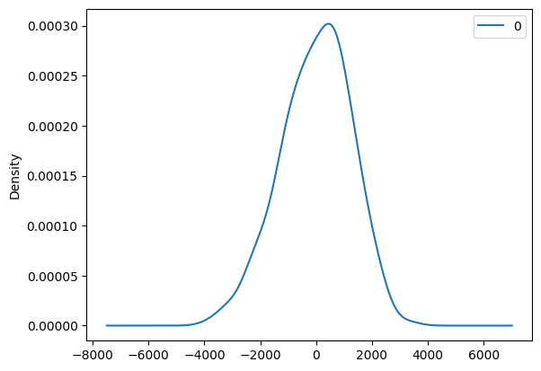
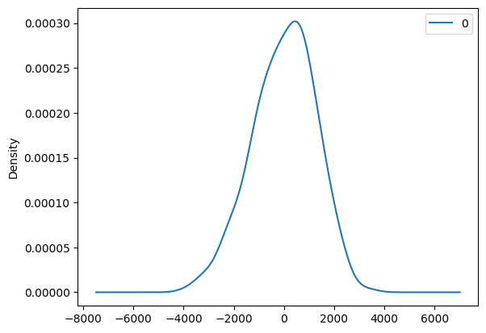

aapineda#
River Flow Forecasting: A Hybrid Approach Integrating Machine Learning and Linear Time Series Models#

Resumen#
La precisa estimación del caudal del río Magdalena en la estación de Calamar, Bolívar, es esencial para la gestión de recursos hídricos y la reducción de riesgos de inundaciones en esta región. En este estudio, se emplearon tres enfoques de modelado para estimar el caudal del río a largo plazo (mensuales). Los datos necesarios para este análisis fueron recopilados específicamente en la estación de monitoreo de Calamar, Bolívar, a lo largo del río Magdalena. Se examinaron tres enfoques de modelado: modelos autoregresivos (AR), modelos de promedio móvil (MA) y modelos autoregresivos de promedio móvil (ARMA). Los resultados revelaron que los modelos MA superaron consistentemente en rendimiento a los modelos AR y ARMA. Además, para mejorar la precisión en la estimación del caudal del río Magdalena, se exploraron modelos de aprendizaje automático. Específicamente, se utilizaron Bosques Aleatorios (RF) y Splines de Regresión Adaptativos Multivariados (MARS) para estimar los valores mensuales de un factor crítico, el caudal del Rio, basándose en datos del Caudal del periodo anterior. Los resultados revelaron que RF y MARS produjeron estimaciones comparables, con RF mostrando una ligera ventaja en el rendimiento. Posteriormente, se implementaron modelos híbridos que combinaron enfoques de series temporales y aprendizaje automático, como RF-AR, RF-MA, RF-ARMA, MARS-AR, MARS-MA y MARS-ARMA, con el objetivo de mejorar la precisión en la estimación del Caudal. Entre estos modelos híbridos, RF-AR y MARS-AR demostraron consistentemente un rendimiento sobresaliente. Los resultados de este estudio sugieren que la combinación de enfoques híbridos, que integran modelos de series temporales y aprendizaje automático, ofrece un enfoque prometedor para estimar el Caudal en la estación de Calamar, Bolívar, a lo largo del río Magdalena. Estas estimaciones precisas del Caudal tienen aplicaciones significativas en proyectos relacionados con el analisis de Riesgo, planificacion de dragados y Energia hidroelectrica.
Palabras clave: Río Magdalena · Estimación · Modelos de Series Temporales · Modelos de Aprendizaje Automático · Modelos Independientes y Híbridos · Caudales.
Metodología#
Población y Muestra:
Población: La población de interés consistió en todos los datos históricos de caudales disponibles para la estación de Calamar, Bolívar, a lo largo del río Magdalena. (1984-2020)
Muestra: La muestra se seleccionó considerando el tiempo y el espacio, incluyendo datos diarios recopilados a lo largo de varios años específicos. La muestra se limitó a la estación de Calamar, Bolívar.
Variables: Se definió un diccionario de características que incluyó las siguientes variables:
Caudal del río Magdalena (variable objetivo).
Variables meteorológicas adicionales (si es necesario).
Fechas y marcas temporales para el análisis de series temporales.
Técnicas: Se emplearon diversas técnicas para la estimación del caudal del río Magdalena, que se dividieron en dos categorías principales:
a. Modelos de Series Temporales:
Modelos AR (Autoregresivos).
Modelos MA (Promedio Móvil).
Modelos ARMA (Autoregresivos de Promedio Móvil).
b. Modelos de Aprendizaje Automático:
Bosques Aleatorios (RF).
Splines de Regresión Adaptativos Multivariados (MARS). Además, se aplicaron modelos híbridos que combinaron enfoques de series temporales y aprendizaje automático, como RF-AR y MARS-AR.
Diseño General: El estudio siguió un diseño de investigación observacional retrospectiva. Se recopilaron datos históricos de caudales del río Magdalena en la estación de Calamar, Bolívar, así como datos de velocidad del viento y, en su caso, datos meteorológicos adicionales. Estos datos retrospectivos se analizaron para desarrollar modelos de estimación del caudal del río.
Validez: La validez del estudio se abordó de la siguiente manera:
Grupos de Datos Coherentes: Se utilizaron datos coherentes y homogéneos recopilados de manera consistente a lo largo del tiempo.
Automatizado: La obtención de datos se automatizó mediante la extracción de datos desde fuentes como archivos CSV y, en su caso, API o consultas SQL.
Técnicas Estadísticas: Se aplicaron pruebas estadísticas como Chi cuadrado, T-Students, Prueba Fisher y análisis de autocorrelación para evaluar la validez y la robustez de los modelos propuestos y los resultados del estudio.
Este enfoque metodológico riguroso garantiza la calidad y la confiabilidad de los resultados del estudio de estimación del caudal del río Magdalena en la estación de Calamar, Bolívar, y sienta las bases para la mejora de la gestión de recursos hídricos en esta región.
Librerias Necesarias#
import pandas as pd
import warnings
warnings.filterwarnings('ignore')
from sklearn.svm import SVC
from sklearn.model_selection import train_test_split
from sklearn.preprocessing import MinMaxScaler
from sklearn.model_selection import GridSearchCV
from sklearn.preprocessing import StandardScaler
from sklearn.linear_model import LogisticRegression
import numpy as np
import matplotlib.pyplot as plt
from sklearn.pipeline import make_pipeline
import tensorflow as tf
from statsmodels.graphics.tsaplots import plot_acf,plot_pacf
from statsmodels.tsa.stattools import adfuller
from statsmodels.tsa.arima.model import ARIMA
from itertools import product
import seaborn as sns
from statsmodels.tsa.arima.model import ARIMA
from tensorflow import keras
import warnings
from statsmodels.tools.sm_exceptions import ConvergenceWarning
warnings.simplefilter('ignore', ConvergenceWarning)
## Errores
from sklearn.metrics import mean_absolute_error, mean_squared_error, r2_score
Dataset#
import pandas as pd
# URL del archivo CSV en GitHub
#url = 'https://raw.githubusercontent.com/aapineda/data/main/Q_Station_25017010.csv'
url = 'https://raw.githubusercontent.com/aapineda/data/main/Q_Station_29037020.csv' ##CALMAR
#url = 'https://raw.githubusercontent.com/aapineda/data/main/Q_Station_21237020.csv'
#url = 'https://raw.githubusercontent.com/aapineda/data/main/Q_Station_25027020.csv'
# Leer el archivo CSV desde la URL
df = pd.read_csv(url)
df.info()
<class 'pandas.core.frame.DataFrame'>
RangeIndex: 13515 entries, 0 to 13514
Data columns (total 3 columns):
# Column Non-Null Count Dtype
--- ------ -------------- -----
0 Date 13515 non-null object
1 Flow 13515 non-null float64
2 ENSO 13515 non-null float64
dtypes: float64(2), object(1)
memory usage: 316.9+ KB
df['Flow'].interpolate(method='linear', inplace=True)
df.head()
| Date | Flow | ENSO | |
|---|---|---|---|
| 0 | 1-01-1984 | 7803.0 | -0.6 |
| 1 | 2-01-1984 | 7718.0 | -0.6 |
| 2 | 3-01-1984 | 7634.0 | -0.6 |
| 3 | 4-01-1984 | 7554.0 | -0.6 |
| 4 | 5-01-1984 | 7498.0 | -0.6 |
df.describe()
| Flow | ENSO | |
|---|---|---|
| count | 13515.000000 | 13515.000000 |
| mean | 7239.553703 | -0.003492 |
| std | 2708.667922 | 0.850624 |
| min | 2011.900000 | -1.800000 |
| 25% | 5177.200000 | -0.600000 |
| 50% | 6987.000000 | -0.100000 |
| 75% | 9157.050000 | 0.500000 |
| max | 14909.000000 | 2.600000 |
df.isnull().sum()
Date 0
Flow 0
ENSO 0
dtype: int64
(df.isnull().sum()/(len(df)))*100
Date 0.0
Flow 0.0
ENSO 0.0
dtype: float64
# Asegúrate de que la columna 'fecha' sea de tipo datetime
df['Date'] = pd.to_datetime(df['Date'], format='%d-%m-%Y', errors='coerce')
# Agrupa los datos por mes y calcula el promedio
serie = df.groupby(df['Date'].dt.to_period('M')).mean()
#serie = df
serie = serie.reset_index(drop=True)
# La variable promedio_por_mes ahora contiene el promedio de 'valor' por mes
print(serie)
Date Flow ENSO
0 1984-01-16 00:00:00 7046.387097 -0.6
1 1984-02-15 00:00:00 5769.344828 -0.4
2 1984-03-16 00:00:00 5016.483871 -0.3
3 1984-04-15 12:00:00 4613.266667 -0.4
4 1984-05-16 00:00:00 6783.838710 -0.5
.. ... ... ...
439 2020-08-16 00:00:00 7277.535484 -0.6
440 2020-09-15 12:00:00 8679.066667 -0.9
441 2020-10-16 00:00:00 9349.567742 -1.2
442 2020-11-15 12:00:00 9804.350000 -1.3
443 2020-12-16 00:00:00 10353.732258 -1.2
[444 rows x 3 columns]
serie
| Date | Flow | ENSO | |
|---|---|---|---|
| 0 | 1984-01-16 00:00:00 | 7046.387097 | -0.6 |
| 1 | 1984-02-15 00:00:00 | 5769.344828 | -0.4 |
| 2 | 1984-03-16 00:00:00 | 5016.483871 | -0.3 |
| 3 | 1984-04-15 12:00:00 | 4613.266667 | -0.4 |
| 4 | 1984-05-16 00:00:00 | 6783.838710 | -0.5 |
| ... | ... | ... | ... |
| 439 | 2020-08-16 00:00:00 | 7277.535484 | -0.6 |
| 440 | 2020-09-15 12:00:00 | 8679.066667 | -0.9 |
| 441 | 2020-10-16 00:00:00 | 9349.567742 | -1.2 |
| 442 | 2020-11-15 12:00:00 | 9804.350000 | -1.3 |
| 443 | 2020-12-16 00:00:00 | 10353.732258 | -1.2 |
444 rows × 3 columns
serie['Mes'] = range(1, len(serie) + 1) #PREDECIR CON MESES
#serie = serie.drop(columns='Date')
serie
| Date | Flow | ENSO | Mes | |
|---|---|---|---|---|
| 0 | 1984-01-16 00:00:00 | 7046.387097 | -0.6 | 1 |
| 1 | 1984-02-15 00:00:00 | 5769.344828 | -0.4 | 2 |
| 2 | 1984-03-16 00:00:00 | 5016.483871 | -0.3 | 3 |
| 3 | 1984-04-15 12:00:00 | 4613.266667 | -0.4 | 4 |
| 4 | 1984-05-16 00:00:00 | 6783.838710 | -0.5 | 5 |
| ... | ... | ... | ... | ... |
| 439 | 2020-08-16 00:00:00 | 7277.535484 | -0.6 | 440 |
| 440 | 2020-09-15 12:00:00 | 8679.066667 | -0.9 | 441 |
| 441 | 2020-10-16 00:00:00 | 9349.567742 | -1.2 | 442 |
| 442 | 2020-11-15 12:00:00 | 9804.350000 | -1.3 | 443 |
| 443 | 2020-12-16 00:00:00 | 10353.732258 | -1.2 | 444 |
444 rows × 4 columns
corr = serie.corr()
f,ax = plt.subplots(figsize=(9,6))
sns.heatmap(corr, annot = True, linewidths=1.5 , fmt = '.2f',ax=ax)
plt.show()
Relacion entre ENSO y Caudal#
import matplotlib.pyplot as plt
from sklearn.preprocessing import StandardScaler # Importa StandardScaler desde sklearn.preprocessing si no está ya importado
# Escala las series 'Flow' y 'ENSO' usando StandardScaler
scaler = StandardScaler()
scaled_flow = scaler.fit_transform(serie[['Flow']])
scaled_enso = scaler.fit_transform(serie[['ENSO']])
# Crea una figura y traza las series
fig, ax = plt.subplots(figsize=(12, 6))
ax.plot(serie['Mes'], scaled_flow, color='red', label='Flow')
ax.plot(serie['Mes'], scaled_enso, color='blue', label='ENSO') # Usamos un color diferente (azul) para ENSO
ax.set_xlabel('Tiempo (Mes)')
ax.set_ylabel('Caudal (escala estándar)')
ax.legend()
ax.set_title('River Flow and ENSO')
ax.tick_params(axis='x', rotation=0) # Rotate x-axis labels for readability
plt.show()
Lag a los datos#
serie['Flow_lag'] = serie['Flow'].shift(1)
serie['ENSO_lag'] = serie['ENSO'].shift(1)
serie
| Date | Flow | ENSO | Mes | Flow_lag | ENSO_lag | |
|---|---|---|---|---|---|---|
| 0 | 1984-01-16 00:00:00 | 7046.387097 | -0.6 | 1 | NaN | NaN |
| 1 | 1984-02-15 00:00:00 | 5769.344828 | -0.4 | 2 | 7046.387097 | -0.6 |
| 2 | 1984-03-16 00:00:00 | 5016.483871 | -0.3 | 3 | 5769.344828 | -0.4 |
| 3 | 1984-04-15 12:00:00 | 4613.266667 | -0.4 | 4 | 5016.483871 | -0.3 |
| 4 | 1984-05-16 00:00:00 | 6783.838710 | -0.5 | 5 | 4613.266667 | -0.4 |
| ... | ... | ... | ... | ... | ... | ... |
| 439 | 2020-08-16 00:00:00 | 7277.535484 | -0.6 | 440 | 6987.390323 | -0.4 |
| 440 | 2020-09-15 12:00:00 | 8679.066667 | -0.9 | 441 | 7277.535484 | -0.6 |
| 441 | 2020-10-16 00:00:00 | 9349.567742 | -1.2 | 442 | 8679.066667 | -0.9 |
| 442 | 2020-11-15 12:00:00 | 9804.350000 | -1.3 | 443 | 9349.567742 | -1.2 |
| 443 | 2020-12-16 00:00:00 | 10353.732258 | -1.2 | 444 | 9804.350000 | -1.3 |
444 rows × 6 columns
serie.at[0, 'Flow_lag'] = 7490.387
#serie.at[0, 'ENSO_lag'] = -0.8
#serie.at[1, 'ENSO_lag'] = -1
serie.at[0, 'ENSO_lag'] = -0.9
serie
| Date | Flow | ENSO | Mes | Flow_lag | ENSO_lag | |
|---|---|---|---|---|---|---|
| 0 | 1984-01-16 00:00:00 | 7046.387097 | -0.6 | 1 | 7490.387000 | -0.9 |
| 1 | 1984-02-15 00:00:00 | 5769.344828 | -0.4 | 2 | 7046.387097 | -0.6 |
| 2 | 1984-03-16 00:00:00 | 5016.483871 | -0.3 | 3 | 5769.344828 | -0.4 |
| 3 | 1984-04-15 12:00:00 | 4613.266667 | -0.4 | 4 | 5016.483871 | -0.3 |
| 4 | 1984-05-16 00:00:00 | 6783.838710 | -0.5 | 5 | 4613.266667 | -0.4 |
| ... | ... | ... | ... | ... | ... | ... |
| 439 | 2020-08-16 00:00:00 | 7277.535484 | -0.6 | 440 | 6987.390323 | -0.4 |
| 440 | 2020-09-15 12:00:00 | 8679.066667 | -0.9 | 441 | 7277.535484 | -0.6 |
| 441 | 2020-10-16 00:00:00 | 9349.567742 | -1.2 | 442 | 8679.066667 | -0.9 |
| 442 | 2020-11-15 12:00:00 | 9804.350000 | -1.3 | 443 | 9349.567742 | -1.2 |
| 443 | 2020-12-16 00:00:00 | 10353.732258 | -1.2 | 444 | 9804.350000 | -1.3 |
444 rows × 6 columns
corr = serie.corr()
f,ax = plt.subplots(figsize=(9,6))
sns.heatmap(corr, annot = True, linewidths=1.5 , fmt = '.2f',ax=ax)
plt.show()
serie_ARIMA= serie[['Flow', 'Mes']].copy()
serie_ARIMA
| Flow | Mes | |
|---|---|---|
| 0 | 7046.387097 | 1 |
| 1 | 5769.344828 | 2 |
| 2 | 5016.483871 | 3 |
| 3 | 4613.266667 | 4 |
| 4 | 6783.838710 | 5 |
| ... | ... | ... |
| 439 | 7277.535484 | 440 |
| 440 | 8679.066667 | 441 |
| 441 | 9349.567742 | 442 |
| 442 | 9804.350000 | 443 |
| 443 | 10353.732258 | 444 |
444 rows × 2 columns
Auto Correlation function (ACF) and Partial Autocorrelation Funcion(PACF).#
plot_pacf(serie_ARIMA['Flow'])
plot_acf(serie_ARIMA['Flow'])


#Function to know stacionality
def Prueba_Dickey_Fuller(series , column_name):
print (f'Resultados de la prueba de Dickey-Fuller para columna: {column_name}')
dftest = adfuller(series, autolag='AIC')
dfoutput = pd.Series(dftest[0:4], index=['Test Statistic','p-value','No Lags Used','Número de observaciones utilizadas'])
for key,value in dftest[4].items():
dfoutput['Critical Value (%s)'%key] = value
print (dfoutput)
if dftest[1] <= 0.05:
print("Conclusion:====>")
print("Rechazar la hipótesis nula")
print("Los datos son estacionarios (Stationary)")
else:
print("Conclusion:====>")
print("No se puede rechazar la hipótesis nula")
print("Los datos son no estacionarios (Non Stationary)")
Prueba_Dickey_Fuller(serie_ARIMA['Flow'],"Flow")
Resultados de la prueba de Dickey-Fuller para columna: Flow
Test Statistic -5.555584
p-value 0.000002
No Lags Used 13.000000
Número de observaciones utilizadas 430.000000
Critical Value (1%) -3.445649
Critical Value (5%) -2.868285
Critical Value (10%) -2.570363
dtype: float64
Conclusion:====>
Rechazar la hipótesis nula
Los datos son estacionarios (Stationary)
# Convertir 'Flow' y 'Mes' en arreglos NumPy y luego aplicar reshape
"""target = serie['Flow'].values.reshape(-1, 1)
data = serie['Mes'].values.reshape(-1, 1)"""
"target = serie['Flow'].values.reshape(-1, 1)\ndata = serie['Mes'].values.reshape(-1, 1)"
Datos de Entrenamiento y Prueba#
size = int(len(serie) * 0.8)
data_train = serie[serie.Mes <= size]
data_test = serie[serie.Mes > size]
#X_train = np.array(data_train.Mes)[:, None] # vector-columna
#X_train = np.array(data_train[['Mes', 'ENSO']])
#X_train = np.array(data_train[['Flow_lag']])
X_train = np.array(data_train[['Flow_lag', 'ENSO_lag']])
y_train = np.array(data_train.Flow)
#X_test = np.array(data_test.Mes)[:, None] # vector-columna
X_test = np.array(data_test[['Flow_lag', 'ENSO_lag']])
y_test = np.array(data_test.Flow)
X_all = np.array(serie[['Flow_lag', 'ENSO_lag']])
len(y_test)
89
Metricas#
# Calculo de Metricas
def metricas(y_test,y_pred):
mae = mean_absolute_error(y_test, y_pred)
mse = mean_squared_error(y_test, y_pred)
rmse = np.sqrt(mse)
print(f"RMSE: {rmse:.2f}")
print(f"MAE: {mae:.2f}")
# Calcular el RRMSE directamente
rrmse = np.sqrt(np.mean((y_test - y_pred) ** 2)) / np.mean(y_test)
print(f"RRMSE: {rrmse:.2f}")
# Calcular R-squared
r2 = r2_score(y_test, y_pred)
print(f"R-squared (R^2): {r2:.2f}")
# Calcular el NSE (coeficiente de eficiencia Nash-Sutcliffe)
nse = 1 - (np.sum((y_test - y_pred) ** 2) / np.sum((y_test - np.mean(y_test)) ** 2))
print(f"NSE (Nash-Sutcliffe Efficiency): {nse:.2f}")
ARIMA#
import pandas as pd
from pandas import DataFrame
import numpy as np
from matplotlib import pyplot as plt
from statsmodels.tsa.arima.model import ARIMA
from sklearn.metrics import mean_squared_error
from math import sqrt
from matplotlib import pyplot
# Load dataset
# Split into train and test sets
X = serie_ARIMA['Flow'].values
train, test = X[:size], X[size:]
import pmdarima as pm
model_1 = pm.auto_arima(X, start_p=1, start_q=0,
test='adf',
max_p=5, max_q=0,
m=1,
d=None,
seasonal=False,
start_P=0,
D=0,
trace=True,
error_action='ignore',
suppress_warnings=True,
stepwise=True)
print(model_1.summary())
Performing stepwise search to minimize aic
ARIMA(1,0,0)(0,0,0)[0] : AIC=7865.329, Time=0.03 sec
ARIMA(0,0,0)(0,0,0)[0] : AIC=9208.012, Time=0.01 sec
ARIMA(2,0,0)(0,0,0)[0] : AIC=7777.791, Time=0.06 sec
ARIMA(3,0,0)(0,0,0)[0] : AIC=7662.598, Time=0.10 sec
ARIMA(4,0,0)(0,0,0)[0] : AIC=7641.101, Time=0.14 sec
ARIMA(5,0,0)(0,0,0)[0] : AIC=7639.764, Time=0.17 sec
ARIMA(5,0,0)(0,0,0)[0] intercept : AIC=7603.639, Time=0.15 sec
ARIMA(4,0,0)(0,0,0)[0] intercept : AIC=7601.648, Time=0.16 sec
ARIMA(3,0,0)(0,0,0)[0] intercept : AIC=7606.573, Time=0.09 sec
Best model: ARIMA(4,0,0)(0,0,0)[0] intercept
Total fit time: 0.926 seconds
SARIMAX Results
==============================================================================
Dep. Variable: y No. Observations: 444
Model: SARIMAX(4, 0, 0) Log Likelihood -3794.824
Date: Tue, 03 Oct 2023 AIC 7601.648
Time: 22:59:24 BIC 7626.223
Sample: 0 HQIC 7611.340
- 444
Covariance Type: opg
==============================================================================
coef std err z P>|z| [0.025 0.975]
------------------------------------------------------------------------------
intercept 1414.4895 230.488 6.137 0.000 962.742 1866.237
ar.L1 1.3864 0.050 27.656 0.000 1.288 1.485
ar.L2 -0.8359 0.083 -10.109 0.000 -0.998 -0.674
ar.L3 0.1300 0.085 1.529 0.126 -0.037 0.297
ar.L4 0.1242 0.049 2.547 0.011 0.029 0.220
sigma2 1.555e+06 0.009 1.64e+08 0.000 1.56e+06 1.56e+06
===================================================================================
Ljung-Box (L1) (Q): 0.00 Jarque-Bera (JB): 9.27
Prob(Q): 0.96 Prob(JB): 0.01
Heteroskedasticity (H): 1.16 Skew: -0.35
Prob(H) (two-sided): 0.36 Kurtosis: 2.91
===================================================================================
Warnings:
[1] Covariance matrix calculated using the outer product of gradients (complex-step).
[2] Covariance matrix is singular or near-singular, with condition number 7.9e+25. Standard errors may be unstable.
orden_ar=(5, 0, 0)
# fit model
model = ARIMA(train, order=orden_ar)
model_fit = model.fit()
# summary of fit model
print(model_fit.summary())
# line plot of residuals
residuals = DataFrame(model_fit.resid)
residuals.plot()
pyplot.show()
# density plot of residuals
residuals.plot(kind='kde')
pyplot.show()
# summary stats of residuals
print(residuals.describe())
SARIMAX Results
==============================================================================
Dep. Variable: y No. Observations: 355
Model: ARIMA(5, 0, 0) Log Likelihood -3036.744
Date: Tue, 03 Oct 2023 AIC 6087.488
Time: 22:59:24 BIC 6114.593
Sample: 0 HQIC 6098.271
- 355
Covariance Type: opg
==============================================================================
coef std err z P>|z| [0.025 0.975]
------------------------------------------------------------------------------
const 7413.0301 367.764 20.157 0.000 6692.227 8133.834
ar.L1 1.4205 0.057 24.728 0.000 1.308 1.533
ar.L2 -0.8886 0.095 -9.400 0.000 -1.074 -0.703
ar.L3 0.1636 0.107 1.530 0.126 -0.046 0.373
ar.L4 0.1146 0.104 1.099 0.272 -0.090 0.319
ar.L5 -0.0103 0.065 -0.158 0.875 -0.138 0.117
sigma2 1.576e+06 1.33e+05 11.854 0.000 1.32e+06 1.84e+06
===================================================================================
Ljung-Box (L1) (Q): 0.00 Jarque-Bera (JB): 6.01
Prob(Q): 0.98 Prob(JB): 0.05
Heteroskedasticity (H): 1.31 Skew: -0.31
Prob(H) (two-sided): 0.14 Kurtosis: 2.87
===================================================================================
Warnings:
[1] Covariance matrix calculated using the outer product of gradients (complex-step).
 

0
count 355.000000
mean -5.996724
std 1254.328712
min -3866.216294
25% -843.690613
50% 66.530667
75% 869.953976
max 3390.829384
import pandas as pd
import numpy as np
from matplotlib import pyplot as plt
from statsmodels.tsa.arima.model import ARIMA
from sklearn.metrics import mean_squared_error
from math import sqrt
Funcion ARIMA#
def ARIMA_estimador(serie_ARIMA, orden):
# Split into train and test sets
predictions = []
residuales = []
X = serie_ARIMA['Flow'].values
size = int(len(X) * 0.8)
train, test = X[:size], X[size:]
history = [x for x in train]
# Walk-forward validation
for t in range(len(test)):
model = ARIMA(history, order=orden)
model_fit = model.fit()
output = model_fit.forecast()
yhat = output[0]
predictions.append(yhat)
obs = test[t]
history.append(obs)
#print('Month=%s, Predicted=%f, Expected=%f' % (serie_ARIMA['Mes'].iloc[size + t], yhat, obs))
history = [x for x in train]
predictions = []
for t in range(len(test)):
model = ARIMA(history, order=orden)
model_fit = model.fit()
output = model_fit.forecast()
yhat = output[0]
predictions.append(yhat)
obs = test[t]
history.append(obs)
residuales.append(obs-yhat)
fig = plt.figure(figsize=(12, 6))
plt.plot(serie_ARIMA['Mes'].iloc[size:], test, marker='o', linestyle='', label='Actual')
plt.plot(serie_ARIMA['Mes'].iloc[size:], predictions, color='red', label='Predicted')
plt.xlabel('Tiempo (Mes)')
plt.ylabel('Caudal (m3/s)')
plt.legend()
plt.title('River Flow Forecast')
plt.xticks(rotation=0)
plt.show()
# Evaluate forecasts
rmse = sqrt(mean_squared_error(test, predictions))
print('Test RMSE: %.3f' % rmse)
# Plot forecasts against actual outcomes
fig = plt.figure(figsize=(12, 6))
plt.plot(serie_ARIMA['Mes'].iloc[size:], residuales, color='red', label='Residuales')
plt.xlabel('Tiempo (Mes)')
plt.ylabel('Caudal (m3/s)')
plt.legend()
plt.title('Residuales obtenidos')
plt.xticks(rotation=0) # Rotate x-axis labels for readability
plt.show()
return predictions, residuales
Modelos lineales#
Entre los modelos lineales se encuentran: autoregressive (AR), moving average (MA), and autoregressive moving average (ARMA)
AR#
import pmdarima as pm
model_1 = pm.auto_arima(X, start_p=1, start_q=0,
test='adf',
max_p=5, max_q=0,
m=1,
d=None,
seasonal=False,
start_P=0,
D=0,
trace=True,
error_action='ignore',
suppress_warnings=True,
stepwise=True)
print(model_1.summary())
Performing stepwise search to minimize aic
ARIMA(1,0,0)(0,0,0)[0] : AIC=7865.329, Time=0.03 sec
ARIMA(0,0,0)(0,0,0)[0] : AIC=9208.012, Time=0.01 sec
ARIMA(2,0,0)(0,0,0)[0] : AIC=7777.791, Time=0.05 sec
ARIMA(3,0,0)(0,0,0)[0] : AIC=7662.598, Time=0.09 sec
ARIMA(4,0,0)(0,0,0)[0] : AIC=7641.101, Time=0.15 sec
ARIMA(5,0,0)(0,0,0)[0] : AIC=7639.764, Time=0.14 sec
ARIMA(5,0,0)(0,0,0)[0] intercept : AIC=7603.639, Time=0.14 sec
ARIMA(4,0,0)(0,0,0)[0] intercept : AIC=7601.648, Time=0.14 sec
ARIMA(3,0,0)(0,0,0)[0] intercept : AIC=7606.573, Time=0.08 sec
Best model: ARIMA(4,0,0)(0,0,0)[0] intercept
Total fit time: 0.827 seconds
SARIMAX Results
==============================================================================
Dep. Variable: y No. Observations: 444
Model: SARIMAX(4, 0, 0) Log Likelihood -3794.824
Date: Tue, 03 Oct 2023 AIC 7601.648
Time: 22:59:26 BIC 7626.223
Sample: 0 HQIC 7611.340
- 444
Covariance Type: opg
==============================================================================
coef std err z P>|z| [0.025 0.975]
------------------------------------------------------------------------------
intercept 1414.4895 230.488 6.137 0.000 962.742 1866.237
ar.L1 1.3864 0.050 27.656 0.000 1.288 1.485
ar.L2 -0.8359 0.083 -10.109 0.000 -0.998 -0.674
ar.L3 0.1300 0.085 1.529 0.126 -0.037 0.297
ar.L4 0.1242 0.049 2.547 0.011 0.029 0.220
sigma2 1.555e+06 0.009 1.64e+08 0.000 1.56e+06 1.56e+06
===================================================================================
Ljung-Box (L1) (Q): 0.00 Jarque-Bera (JB): 9.27
Prob(Q): 0.96 Prob(JB): 0.01
Heteroskedasticity (H): 1.16 Skew: -0.35
Prob(H) (two-sided): 0.36 Kurtosis: 2.91
===================================================================================
Warnings:
[1] Covariance matrix calculated using the outer product of gradients (complex-step).
[2] Covariance matrix is singular or near-singular, with condition number 7.9e+25. Standard errors may be unstable.
orden_ar=(5, 0, 0)
# fit model
model = ARIMA(train, order=orden_ar)
model_fit = model.fit()
# summary of fit model
print(model_fit.summary())
# line plot of residuals
residuals = DataFrame(model_fit.resid)
residuals.plot()
pyplot.show()
# density plot of residuals
residuals.plot(kind='kde')
pyplot.show()
# summary stats of residuals
print(residuals.describe())
SARIMAX Results
==============================================================================
Dep. Variable: y No. Observations: 355
Model: ARIMA(5, 0, 0) Log Likelihood -3036.744
Date: Tue, 03 Oct 2023 AIC 6087.488
Time: 22:59:26 BIC 6114.593
Sample: 0 HQIC 6098.271
- 355
Covariance Type: opg
==============================================================================
coef std err z P>|z| [0.025 0.975]
------------------------------------------------------------------------------
const 7413.0301 367.764 20.157 0.000 6692.227 8133.834
ar.L1 1.4205 0.057 24.728 0.000 1.308 1.533
ar.L2 -0.8886 0.095 -9.400 0.000 -1.074 -0.703
ar.L3 0.1636 0.107 1.530 0.126 -0.046 0.373
ar.L4 0.1146 0.104 1.099 0.272 -0.090 0.319
ar.L5 -0.0103 0.065 -0.158 0.875 -0.138 0.117
sigma2 1.576e+06 1.33e+05 11.854 0.000 1.32e+06 1.84e+06
===================================================================================
Ljung-Box (L1) (Q): 0.00 Jarque-Bera (JB): 6.01
Prob(Q): 0.98 Prob(JB): 0.05
Heteroskedasticity (H): 1.31 Skew: -0.31
Prob(H) (two-sided): 0.14 Kurtosis: 2.87
===================================================================================
Warnings:
[1] Covariance matrix calculated using the outer product of gradients (complex-step).
0
count 355.000000
mean -5.996724
std 1254.328712
min -3866.216294
25% -843.690613
50% 66.530667
75% 869.953976
max 3390.829384
predictions = []
residuales = []
orden_ar= (5,0,0)
predictions_AR, residuales_AR = ARIMA_estimador(serie_ARIMA, orden_ar)
Test RMSE: 1216.840
metricas(y_test, predictions_AR)
RMSE: 1216.84
MAE: 968.17
RRMSE: 0.19
R-squared (R^2): 0.70
NSE (Nash-Sutcliffe Efficiency): 0.70
ARMA#
import pmdarima as pm
model_1 = pm.auto_arima(X, start_p=1, start_q=1,
test='adf',
max_p=5, max_q=5,
m=1,
d=None,
seasonal=False,
start_P=0,
D=0,
trace=True,
error_action='ignore',
suppress_warnings=True,
stepwise=True)
print(model_1.summary())
Performing stepwise search to minimize aic
ARIMA(1,0,1)(0,0,0)[0] : AIC=7727.800, Time=0.08 sec
ARIMA(0,0,0)(0,0,0)[0] : AIC=9208.012, Time=0.01 sec
ARIMA(1,0,0)(0,0,0)[0] : AIC=7865.329, Time=0.02 sec
ARIMA(0,0,1)(0,0,0)[0] : AIC=inf, Time=0.12 sec
ARIMA(2,0,1)(0,0,0)[0] : AIC=7724.921, Time=0.21 sec
ARIMA(2,0,0)(0,0,0)[0] : AIC=7777.791, Time=0.05 sec
ARIMA(3,0,1)(0,0,0)[0] : AIC=7640.387, Time=0.33 sec
ARIMA(3,0,0)(0,0,0)[0] : AIC=7662.598, Time=0.07 sec
ARIMA(4,0,1)(0,0,0)[0] : AIC=7641.410, Time=0.24 sec
ARIMA(3,0,2)(0,0,0)[0] : AIC=7605.158, Time=0.66 sec
ARIMA(2,0,2)(0,0,0)[0] : AIC=inf, Time=0.70 sec
ARIMA(4,0,2)(0,0,0)[0] : AIC=inf, Time=0.69 sec
ARIMA(3,0,3)(0,0,0)[0] : AIC=7555.284, Time=0.74 sec
ARIMA(2,0,3)(0,0,0)[0] : AIC=inf, Time=0.56 sec
ARIMA(4,0,3)(0,0,0)[0] : AIC=7557.907, Time=0.77 sec
ARIMA(3,0,4)(0,0,0)[0] : AIC=7560.306, Time=0.90 sec
ARIMA(2,0,4)(0,0,0)[0] : AIC=inf, Time=0.58 sec
ARIMA(4,0,4)(0,0,0)[0] : AIC=7525.732, Time=1.04 sec
ARIMA(5,0,4)(0,0,0)[0] : AIC=7525.104, Time=1.50 sec
ARIMA(5,0,3)(0,0,0)[0] : AIC=7620.838, Time=0.89 sec
ARIMA(5,0,5)(0,0,0)[0] : AIC=inf, Time=1.41 sec
ARIMA(4,0,5)(0,0,0)[0] : AIC=7516.928, Time=1.23 sec
ARIMA(3,0,5)(0,0,0)[0] : AIC=7554.974, Time=1.24 sec
ARIMA(4,0,5)(0,0,0)[0] intercept : AIC=7476.994, Time=1.60 sec
ARIMA(3,0,5)(0,0,0)[0] intercept : AIC=7514.302, Time=1.43 sec
ARIMA(4,0,4)(0,0,0)[0] intercept : AIC=7513.373, Time=1.06 sec
ARIMA(5,0,5)(0,0,0)[0] intercept : AIC=7490.559, Time=1.73 sec
ARIMA(3,0,4)(0,0,0)[0] intercept : AIC=7502.789, Time=0.99 sec
ARIMA(5,0,4)(0,0,0)[0] intercept : AIC=7500.611, Time=1.23 sec
Best model: ARIMA(4,0,5)(0,0,0)[0] intercept
Total fit time: 22.087 seconds
SARIMAX Results
==============================================================================
Dep. Variable: y No. Observations: 444
Model: SARIMAX(4, 0, 5) Log Likelihood -3727.497
Date: Tue, 03 Oct 2023 AIC 7476.994
Time: 23:00:13 BIC 7522.048
Sample: 0 HQIC 7494.761
- 444
Covariance Type: opg
==============================================================================
coef std err z P>|z| [0.025 0.975]
------------------------------------------------------------------------------
intercept 1859.5711 235.166 7.907 0.000 1398.654 2320.488
ar.L1 2.4884 0.075 33.390 0.000 2.342 2.635
ar.L2 -3.2278 0.131 -24.683 0.000 -3.484 -2.972
ar.L3 2.2276 0.131 17.046 0.000 1.971 2.484
ar.L4 -0.7410 0.058 -12.695 0.000 -0.855 -0.627
ma.L1 -1.3509 0.088 -15.429 0.000 -1.522 -1.179
ma.L2 1.2730 0.100 12.746 0.000 1.077 1.469
ma.L3 0.0251 0.126 0.199 0.842 -0.221 0.271
ma.L4 -0.3552 0.086 -4.141 0.000 -0.523 -0.187
ma.L5 0.3409 0.063 5.424 0.000 0.218 0.464
sigma2 1.163e+06 0.064 1.82e+07 0.000 1.16e+06 1.16e+06
===================================================================================
Ljung-Box (L1) (Q): 2.22 Jarque-Bera (JB): 1.43
Prob(Q): 0.14 Prob(JB): 0.49
Heteroskedasticity (H): 1.38 Skew: -0.10
Prob(H) (two-sided): 0.05 Kurtosis: 3.19
===================================================================================
Warnings:
[1] Covariance matrix calculated using the outer product of gradients (complex-step).
[2] Covariance matrix is singular or near-singular, with condition number 2.02e+23. Standard errors may be unstable.
orden_arma=(3, 0, 3)
# fit model
model = ARIMA(train, order=orden_arma)
model_fit = model.fit()
# summary of fit model
print(model_fit.summary())
# line plot of residuals
residuals = DataFrame(model_fit.resid)
residuals.plot()
pyplot.show()
# density plot of residuals
residuals.plot(kind='kde')
pyplot.show()
# summary stats of residuals
print(residuals.describe())
SARIMAX Results
==============================================================================
Dep. Variable: y No. Observations: 355
Model: ARIMA(3, 0, 3) Log Likelihood -2997.559
Date: Tue, 03 Oct 2023 AIC 6011.118
Time: 23:00:14 BIC 6042.094
Sample: 0 HQIC 6023.441
- 355
Covariance Type: opg
==============================================================================
coef std err z P>|z| [0.025 0.975]
------------------------------------------------------------------------------
const 7413.0298 497.511 14.900 0.000 6437.925 8388.134
ar.L1 1.7600 0.048 36.386 0.000 1.665 1.855
ar.L2 -1.7533 0.050 -34.982 0.000 -1.852 -1.655
ar.L3 0.7638 0.048 15.977 0.000 0.670 0.857
ma.L1 -0.4552 0.061 -7.509 0.000 -0.574 -0.336
ma.L2 0.5166 0.056 9.269 0.000 0.407 0.626
ma.L3 0.4490 0.060 7.452 0.000 0.331 0.567
sigma2 1.406e+06 0.245 5.74e+06 0.000 1.41e+06 1.41e+06
===================================================================================
Ljung-Box (L1) (Q): 0.11 Jarque-Bera (JB): 8.79
Prob(Q): 0.74 Prob(JB): 0.01
Heteroskedasticity (H): 1.18 Skew: -0.33
Prob(H) (two-sided): 0.37 Kurtosis: 3.40
===================================================================================
Warnings:
[1] Covariance matrix calculated using the outer product of gradients (complex-step).
[2] Covariance matrix is singular or near-singular, with condition number 1.47e+23. Standard errors may be unstable.
0
count 355.000000
mean -4.070046
std 1119.383301
min -3600.255485
25% -732.651711
50% 109.265873
75% 728.571345
max 2922.233298
serie_ARIMA
| Flow | Mes | |
|---|---|---|
| 0 | 7046.387097 | 1 |
| 1 | 5769.344828 | 2 |
| 2 | 5016.483871 | 3 |
| 3 | 4613.266667 | 4 |
| 4 | 6783.838710 | 5 |
| ... | ... | ... |
| 439 | 7277.535484 | 440 |
| 440 | 8679.066667 | 441 |
| 441 | 9349.567742 | 442 |
| 442 | 9804.350000 | 443 |
| 443 | 10353.732258 | 444 |
444 rows × 2 columns
predictions_ARMA, residuales_ARMA = ARIMA_estimador(serie_ARIMA, orden_arma)
Test RMSE: 1096.834
metricas(y_test, predictions_ARMA)
RMSE: 1096.83
MAE: 845.08
RRMSE: 0.17
R-squared (R^2): 0.75
NSE (Nash-Sutcliffe Efficiency): 0.75
Ridge#
from sklearn.linear_model import Ridge
# Definir el conjunto de hiperparámetros para la búsqueda en cuadrícula
param_grid = {
'ridge__alpha': [0.1, 1.0, 10.0],
}
# Crear el pipeline con MinMaxScaler y Ridge
pipe = make_pipeline(MinMaxScaler(), Ridge())
# Realizar la búsqueda en cuadrícula
grid = GridSearchCV(pipe, param_grid, cv=5, scoring='r2', n_jobs=-1)
grid.fit(X_train, y_train)
GridSearchCV(cv=5,
estimator=Pipeline(steps=[('minmaxscaler', MinMaxScaler()),
('ridge', Ridge())]),
n_jobs=-1, param_grid={'ridge__alpha': [0.1, 1.0, 10.0]},
scoring='r2')In a Jupyter environment, please rerun this cell to show the HTML representation or trust the notebook. On GitHub, the HTML representation is unable to render, please try loading this page with nbviewer.org.
GridSearchCV(cv=5,
estimator=Pipeline(steps=[('minmaxscaler', MinMaxScaler()),
('ridge', Ridge())]),
n_jobs=-1, param_grid={'ridge__alpha': [0.1, 1.0, 10.0]},
scoring='r2')Pipeline(steps=[('minmaxscaler', MinMaxScaler()), ('ridge', Ridge())])MinMaxScaler()
Ridge()
print("Best estimator:\n{}".format(grid.best_estimator_))
Best estimator:
Pipeline(steps=[('minmaxscaler', MinMaxScaler()), ('ridge', Ridge(alpha=0.1))])
y_pred = grid.predict(X_test)
print("Training-set score: {:.2f}".format(grid.score(X_train, y_train)))
print("Test-set score: {:.2f}".format(grid.score(X_test, y_test)))
# Calculo de Metricas
metricas(y_test, y_pred)
Training-set score: 0.64
Test-set score: 0.59
RMSE: 1423.44
MAE: 1130.75
RRMSE: 0.22
R-squared (R^2): 0.59
NSE (Nash-Sutcliffe Efficiency): 0.59
Lasso#
from sklearn.linear_model import Lasso
# Definir el conjunto de hiperparámetros para la búsqueda en cuadrícula
param_grid = {
'lasso__alpha': [0.1, 1.0, 10.0],
}
# Crear el pipeline con MinMaxScaler y Lasso
pipe = make_pipeline(MinMaxScaler(), Lasso())
# Realizar la búsqueda en cuadrícula
grid = GridSearchCV(pipe, param_grid, cv=5, scoring='r2', n_jobs=-1)
grid.fit(X_train, y_train)
GridSearchCV(cv=5,
estimator=Pipeline(steps=[('minmaxscaler', MinMaxScaler()),
('lasso', Lasso())]),
n_jobs=-1, param_grid={'lasso__alpha': [0.1, 1.0, 10.0]},
scoring='r2')In a Jupyter environment, please rerun this cell to show the HTML representation or trust the notebook. On GitHub, the HTML representation is unable to render, please try loading this page with nbviewer.org.
GridSearchCV(cv=5,
estimator=Pipeline(steps=[('minmaxscaler', MinMaxScaler()),
('lasso', Lasso())]),
n_jobs=-1, param_grid={'lasso__alpha': [0.1, 1.0, 10.0]},
scoring='r2')Pipeline(steps=[('minmaxscaler', MinMaxScaler()), ('lasso', Lasso())])MinMaxScaler()
Lasso()
print("Best estimator:\n{}".format(grid.best_estimator_))
Best estimator:
Pipeline(steps=[('minmaxscaler', MinMaxScaler()), ('lasso', Lasso(alpha=0.1))])
y_pred = grid.predict(X_test)
print("Training-set score: {:.2f}".format(grid.score(X_train, y_train)))
print("Test-set score: {:.2f}".format(grid.score(X_test, y_test)))
# Calculo de Metricas
metricas(y_test, y_pred)
Training-set score: 0.64
Test-set score: 0.59
RMSE: 1424.01
MAE: 1130.71
RRMSE: 0.22
R-squared (R^2): 0.59
NSE (Nash-Sutcliffe Efficiency): 0.59
Random Forest#
from sklearn.ensemble import RandomForestRegressor
from sklearn.model_selection import train_test_split
import matplotlib.pyplot as plt
pipe = make_pipeline(StandardScaler(), RandomForestRegressor())
param_grid = {'randomforestregressor__max_depth': [2,3,4],
'randomforestregressor__n_estimators': [400],
'randomforestregressor__max_leaf_nodes': [2,4,6,8],
'randomforestregressor__min_samples_split': [2,5,10,15]}
RF = GridSearchCV(pipe, param_grid, scoring='r2', cv=5, n_jobs=-1)
RF.fit(X_train, y_train)
GridSearchCV(cv=5,
estimator=Pipeline(steps=[('standardscaler', StandardScaler()),
('randomforestregressor',
RandomForestRegressor())]),
n_jobs=-1,
param_grid={'randomforestregressor__max_depth': [2, 3, 4],
'randomforestregressor__max_leaf_nodes': [2, 4, 6, 8],
'randomforestregressor__min_samples_split': [2, 5, 10,
15],
'randomforestregressor__n_estimators': [400]},
scoring='r2')In a Jupyter environment, please rerun this cell to show the HTML representation or trust the notebook. On GitHub, the HTML representation is unable to render, please try loading this page with nbviewer.org.
GridSearchCV(cv=5,
estimator=Pipeline(steps=[('standardscaler', StandardScaler()),
('randomforestregressor',
RandomForestRegressor())]),
n_jobs=-1,
param_grid={'randomforestregressor__max_depth': [2, 3, 4],
'randomforestregressor__max_leaf_nodes': [2, 4, 6, 8],
'randomforestregressor__min_samples_split': [2, 5, 10,
15],
'randomforestregressor__n_estimators': [400]},
scoring='r2')Pipeline(steps=[('standardscaler', StandardScaler()),
('randomforestregressor', RandomForestRegressor())])StandardScaler()
RandomForestRegressor()
print("Best estimator:\n{}".format(RF.best_estimator_))
Best estimator:
Pipeline(steps=[('standardscaler', StandardScaler()),
('randomforestregressor',
RandomForestRegressor(max_depth=4, max_leaf_nodes=8,
min_samples_split=5,
n_estimators=400))])
print("Training-set score: {:.2f}".format(RF.score(X_train, y_train)))
print("Test-set score: {:.2f}".format(RF.score(X_test, y_test)))
Training-set score: 0.69
Test-set score: 0.53
res_RF_train = y_train-RF.predict(X_train)
y_pred = RF.predict(X_test)
res_RF_test= y_test-y_pred
y_tree = RF.predict(X_all)
plt.figure(figsize=(14,6))
plt.semilogy(data_train.Mes, data_train.Flow, label="Training data")
plt.semilogy(data_test.Mes, data_test.Flow, label="Test data")
plt.semilogy(serie.Mes, y_tree, label="Tree prediction")
plt.legend();

Metricas#
# Calculo de Metricas
metricas(y_test, y_pred)
RMSE: 1515.90
MAE: 1179.60
RRMSE: 0.23
R-squared (R^2): 0.53
NSE (Nash-Sutcliffe Efficiency): 0.53
fig = plt.figure(figsize=(14, 6))
plt.plot(data_test.Mes, y_test, marker='o', linestyle='', label="Test data")
plt.plot(data_test.Mes, y_pred, label="RF")
plt.legend(loc='lower right', bbox_to_anchor=(1, 0))
# Agregamos nombres a los ejes
plt.xlabel("Tiempo (Mes)") # Nombre del eje x
plt.ylabel("Caudal (m3/s)") # Nombre del eje y
plt.xlim(data_test.Mes.min(), data_test.Mes.max())
plt.show()
k-NN regresor#
import pandas as pd
import matplotlib.pyplot as plt
import numpy as np
from sklearn.preprocessing import MinMaxScaler
from sklearn.model_selection import train_test_split
from sklearn.model_selection import GridSearchCV
from sklearn import neighbors
from sklearn.metrics import mean_absolute_error
from sklearn.metrics import mean_squared_error
from sklearn.metrics import mean_squared_log_error
from sklearn.metrics import r2_score
from sklearn.metrics import explained_variance_score
from sklearn.pipeline import make_pipeline
from sklearn.linear_model import LogisticRegression
from sklearn.neighbors import KNeighborsRegressor
pipe = make_pipeline(StandardScaler(), KNeighborsRegressor())
param_grid = {'kneighborsregressor__n_neighbors': [1,2,4,6,8,10,15,20,30,40]}
grid = GridSearchCV(pipe, param_grid, cv=5, scoring='r2')
grid.fit(X_train, y_train)
GridSearchCV(cv=5,
estimator=Pipeline(steps=[('standardscaler', StandardScaler()),
('kneighborsregressor',
KNeighborsRegressor())]),
param_grid={'kneighborsregressor__n_neighbors': [1, 2, 4, 6, 8, 10,
15, 20, 30, 40]},
scoring='r2')In a Jupyter environment, please rerun this cell to show the HTML representation or trust the notebook. On GitHub, the HTML representation is unable to render, please try loading this page with nbviewer.org.
GridSearchCV(cv=5,
estimator=Pipeline(steps=[('standardscaler', StandardScaler()),
('kneighborsregressor',
KNeighborsRegressor())]),
param_grid={'kneighborsregressor__n_neighbors': [1, 2, 4, 6, 8, 10,
15, 20, 30, 40]},
scoring='r2')Pipeline(steps=[('standardscaler', StandardScaler()),
('kneighborsregressor', KNeighborsRegressor())])StandardScaler()
KNeighborsRegressor()
print("Best estimator:\n{}".format(grid.best_estimator_))
Best estimator:
Pipeline(steps=[('standardscaler', StandardScaler()),
('kneighborsregressor', KNeighborsRegressor(n_neighbors=15))])
y_pred = grid.predict(X_test)
print("Training-set score: {:.2f}".format(grid.score(X_train, y_train)))
print("Test-set score: {:.2f}".format(grid.score(X_test, y_test)))
Training-set score: 0.66
Test-set score: 0.53
# Calculo de Metricas
metricas(y_test, y_pred)
RMSE: 1514.89
MAE: 1174.65
RRMSE: 0.23
R-squared (R^2): 0.53
NSE (Nash-Sutcliffe Efficiency): 0.53
SVR#
from sklearn.svm import SVR
param_grid = {
'svr__kernel': ['linear', 'rbf'],
'svr__C': [0.001, 0.01, 0.1, 1, 10, 100],
'svr__epsilon': [0.001, 0.01,0.1, 0.2, 0.5, 1]
}
pipe = make_pipeline(MinMaxScaler(), SVR())
grid = GridSearchCV(pipe, param_grid, cv=5, scoring='r2', n_jobs=-1)
grid.fit(X_train, y_train)
GridSearchCV(cv=5,
estimator=Pipeline(steps=[('minmaxscaler', MinMaxScaler()),
('svr', SVR())]),
n_jobs=-1,
param_grid={'svr__C': [0.001, 0.01, 0.1, 1, 10, 100],
'svr__epsilon': [0.001, 0.01, 0.1, 0.2, 0.5, 1],
'svr__kernel': ['linear', 'rbf']},
scoring='r2')In a Jupyter environment, please rerun this cell to show the HTML representation or trust the notebook. On GitHub, the HTML representation is unable to render, please try loading this page with nbviewer.org.
GridSearchCV(cv=5,
estimator=Pipeline(steps=[('minmaxscaler', MinMaxScaler()),
('svr', SVR())]),
n_jobs=-1,
param_grid={'svr__C': [0.001, 0.01, 0.1, 1, 10, 100],
'svr__epsilon': [0.001, 0.01, 0.1, 0.2, 0.5, 1],
'svr__kernel': ['linear', 'rbf']},
scoring='r2')Pipeline(steps=[('minmaxscaler', MinMaxScaler()), ('svr', SVR())])MinMaxScaler()
SVR()
print("Best estimator:\n{}".format(grid.best_estimator_))
Best estimator:
Pipeline(steps=[('minmaxscaler', MinMaxScaler()),
('svr', SVR(C=100, epsilon=0.001))])
y_pred = grid.predict(X_test)
# Calculo de Metricas
metricas(y_test, y_pred)
RMSE: 1624.98
MAE: 1303.93
RRMSE: 0.25
R-squared (R^2): 0.46
NSE (Nash-Sutcliffe Efficiency): 0.46
Redes Neuronales#
tf.saved_model.LoadOptions(
allow_partial_checkpoint=False,
experimental_io_device='/localhost',
experimental_skip_checkpoint=False,
experimental_variable_policy=None,
)
<tensorflow.python.saved_model.load_options.LoadOptions at 0x15c181a75c0>
import tensorflow as tf
from tensorflow import keras
from sklearn.preprocessing import MinMaxScaler
from sklearn.pipeline import Pipeline
from sklearn.compose import TransformedTargetRegressor
from sklearn.metrics import mean_squared_error
from tensorflow.keras.optimizers import Adam
from tensorflow.keras.callbacks import EarlyStopping
from keras.models import load_model
model.save('model.h5')
model = load_model('model.h5')
scaler = MinMaxScaler()
# Define el modelo de red neuronal
model = keras.Sequential([
keras.layers.Input(shape=(X_train.shape[1])),
keras.layers.Dense(64, activation='relu'),
keras.layers.Dense(64, activation='relu'),
keras.layers.Dense(128, activation='relu'),
keras.layers.Dense(1)
])
# Compila el modelo
optimizer = Adam(learning_rate=0.001)
model.compile(optimizer=optimizer, loss='mean_squared_error')
# Define el pipeline con transformador de escala y modelo
pipeline = Pipeline([
('scaler', scaler),
('model', model)
])
# Define el target transformer para manejar las transformaciones inversas en las predicciones
target_transformer = TransformedTargetRegressor(regressor=pipeline, transformer=scaler)
model.save('model')
# Define el callback EarlyStopping
early_stopping = EarlyStopping(monitor='val_loss', patience=10, restore_best_weights=True)
# Entrena el modelo utilizando el pipeline y el target transformer
history = target_transformer.fit(X_train, y_train, model_epochs=100,
model_batch_size=64, model_validation_split=0.2, model_callbacks=[early_stopping])
# Evalúa el modelo en datos de prueba
y_pred = target_transformer.predict(X_test)
# Grafica los resultados
plt.figure(figsize=(10, 6))
plt.plot(y_test, label='Datos reales', marker='o', linestyle='' )
plt.plot(y_pred, label='Predicciones')
plt.legend()
plt.show()
INFO:tensorflow:Assets written to: model\assets
INFO:tensorflow:Assets written to: ram://e1b158ad-d610-4ec9-a318-27f32d126cea/assets
---------------------------------------------------------------------------
FileNotFoundError Traceback (most recent call last)
c:\Users\Rirub\OneDrive - Universidad del Norte\MAESTRIA\MachineLearningUN\aapineda_ml202330\docs\model_final.ipynb Cell 102 line 4
<a href='vscode-notebook-cell:/c%3A/Users/Rirub/OneDrive%20-%20Universidad%20del%20Norte/MAESTRIA/MachineLearningUN/aapineda_ml202330/docs/model_final.ipynb#Y203sZmlsZQ%3D%3D?line=40'>41</a> early_stopping = EarlyStopping(monitor='val_loss', patience=10, restore_best_weights=True)
<a href='vscode-notebook-cell:/c%3A/Users/Rirub/OneDrive%20-%20Universidad%20del%20Norte/MAESTRIA/MachineLearningUN/aapineda_ml202330/docs/model_final.ipynb#Y203sZmlsZQ%3D%3D?line=42'>43</a> # Entrena el modelo utilizando el pipeline y el target transformer
---> <a href='vscode-notebook-cell:/c%3A/Users/Rirub/OneDrive%20-%20Universidad%20del%20Norte/MAESTRIA/MachineLearningUN/aapineda_ml202330/docs/model_final.ipynb#Y203sZmlsZQ%3D%3D?line=43'>44</a> history = target_transformer.fit(X_train, y_train, model_epochs=100,
<a href='vscode-notebook-cell:/c%3A/Users/Rirub/OneDrive%20-%20Universidad%20del%20Norte/MAESTRIA/MachineLearningUN/aapineda_ml202330/docs/model_final.ipynb#Y203sZmlsZQ%3D%3D?line=44'>45</a> model_batch_size=64, model_validation_split=0.2, model_callbacks=[early_stopping])
<a href='vscode-notebook-cell:/c%3A/Users/Rirub/OneDrive%20-%20Universidad%20del%20Norte/MAESTRIA/MachineLearningUN/aapineda_ml202330/docs/model_final.ipynb#Y203sZmlsZQ%3D%3D?line=46'>47</a> # Evalúa el modelo en datos de prueba
<a href='vscode-notebook-cell:/c%3A/Users/Rirub/OneDrive%20-%20Universidad%20del%20Norte/MAESTRIA/MachineLearningUN/aapineda_ml202330/docs/model_final.ipynb#Y203sZmlsZQ%3D%3D?line=47'>48</a> y_pred = target_transformer.predict(X_test)
File c:\Users\Rirub\miniconda3\envs\ml_venv\lib\site-packages\sklearn\base.py:1151, in _fit_context.<locals>.decorator.<locals>.wrapper(estimator, *args, **kwargs)
1144 estimator._validate_params()
1146 with config_context(
1147 skip_parameter_validation=(
1148 prefer_skip_nested_validation or global_skip_validation
1149 )
1150 ):
-> 1151 return fit_method(estimator, *args, **kwargs)
File c:\Users\Rirub\miniconda3\envs\ml_venv\lib\site-packages\sklearn\compose\_target.py:265, in TransformedTargetRegressor.fit(self, X, y, **fit_params)
263 self.regressor_ = LinearRegression()
264 else:
--> 265 self.regressor_ = clone(self.regressor)
267 self.regressor_.fit(X, y_trans, **fit_params)
269 if hasattr(self.regressor_, "feature_names_in_"):
File c:\Users\Rirub\miniconda3\envs\ml_venv\lib\site-packages\sklearn\base.py:75, in clone(estimator, safe)
41 """Construct a new unfitted estimator with the same parameters.
42
43 Clone does a deep copy of the model in an estimator
(...)
72 found in :ref:`randomness`.
73 """
74 if hasattr(estimator, "__sklearn_clone__") and not inspect.isclass(estimator):
---> 75 return estimator.__sklearn_clone__()
76 return _clone_parametrized(estimator, safe=safe)
File c:\Users\Rirub\miniconda3\envs\ml_venv\lib\site-packages\sklearn\base.py:267, in BaseEstimator.__sklearn_clone__(self)
266 def __sklearn_clone__(self):
--> 267 return _clone_parametrized(self)
File c:\Users\Rirub\miniconda3\envs\ml_venv\lib\site-packages\sklearn\base.py:107, in _clone_parametrized(estimator, safe)
105 new_object_params = estimator.get_params(deep=False)
106 for name, param in new_object_params.items():
--> 107 new_object_params[name] = clone(param, safe=False)
109 new_object = klass(**new_object_params)
110 try:
File c:\Users\Rirub\miniconda3\envs\ml_venv\lib\site-packages\sklearn\base.py:76, in clone(estimator, safe)
74 if hasattr(estimator, "__sklearn_clone__") and not inspect.isclass(estimator):
75 return estimator.__sklearn_clone__()
---> 76 return _clone_parametrized(estimator, safe=safe)
File c:\Users\Rirub\miniconda3\envs\ml_venv\lib\site-packages\sklearn\base.py:85, in _clone_parametrized(estimator, safe)
83 # XXX: not handling dictionaries
84 if estimator_type in (list, tuple, set, frozenset):
---> 85 return estimator_type([clone(e, safe=safe) for e in estimator])
86 elif not hasattr(estimator, "get_params") or isinstance(estimator, type):
87 if not safe:
File c:\Users\Rirub\miniconda3\envs\ml_venv\lib\site-packages\sklearn\base.py:85, in <listcomp>(.0)
83 # XXX: not handling dictionaries
84 if estimator_type in (list, tuple, set, frozenset):
---> 85 return estimator_type([clone(e, safe=safe) for e in estimator])
86 elif not hasattr(estimator, "get_params") or isinstance(estimator, type):
87 if not safe:
File c:\Users\Rirub\miniconda3\envs\ml_venv\lib\site-packages\sklearn\base.py:76, in clone(estimator, safe)
74 if hasattr(estimator, "__sklearn_clone__") and not inspect.isclass(estimator):
75 return estimator.__sklearn_clone__()
---> 76 return _clone_parametrized(estimator, safe=safe)
File c:\Users\Rirub\miniconda3\envs\ml_venv\lib\site-packages\sklearn\base.py:85, in _clone_parametrized(estimator, safe)
83 # XXX: not handling dictionaries
84 if estimator_type in (list, tuple, set, frozenset):
---> 85 return estimator_type([clone(e, safe=safe) for e in estimator])
86 elif not hasattr(estimator, "get_params") or isinstance(estimator, type):
87 if not safe:
File c:\Users\Rirub\miniconda3\envs\ml_venv\lib\site-packages\sklearn\base.py:85, in <listcomp>(.0)
83 # XXX: not handling dictionaries
84 if estimator_type in (list, tuple, set, frozenset):
---> 85 return estimator_type([clone(e, safe=safe) for e in estimator])
86 elif not hasattr(estimator, "get_params") or isinstance(estimator, type):
87 if not safe:
File c:\Users\Rirub\miniconda3\envs\ml_venv\lib\site-packages\sklearn\base.py:76, in clone(estimator, safe)
74 if hasattr(estimator, "__sklearn_clone__") and not inspect.isclass(estimator):
75 return estimator.__sklearn_clone__()
---> 76 return _clone_parametrized(estimator, safe=safe)
File c:\Users\Rirub\miniconda3\envs\ml_venv\lib\site-packages\sklearn\base.py:88, in _clone_parametrized(estimator, safe)
86 elif not hasattr(estimator, "get_params") or isinstance(estimator, type):
87 if not safe:
---> 88 return copy.deepcopy(estimator)
89 else:
90 if isinstance(estimator, type):
File c:\Users\Rirub\miniconda3\envs\ml_venv\lib\copy.py:153, in deepcopy(x, memo, _nil)
151 copier = getattr(x, "__deepcopy__", None)
152 if copier is not None:
--> 153 y = copier(memo)
154 else:
155 reductor = dispatch_table.get(cls)
File c:\Users\Rirub\miniconda3\envs\ml_venv\lib\site-packages\keras\engine\training.py:377, in Model.__deepcopy__(self, memo)
375 def __deepcopy__(self, memo):
376 if self.built:
--> 377 new = pickle_utils.deserialize_model_from_bytecode(
378 *pickle_utils.serialize_model_as_bytecode(self)
379 )
380 memo[id(self)] = new
381 else:
382 # See comment in __reduce__ for explanation
File c:\Users\Rirub\miniconda3\envs\ml_venv\lib\site-packages\keras\saving\pickle_utils.py:47, in deserialize_model_from_bytecode(serialized_model)
45 with tf.io.gfile.GFile(dest_path, "wb") as f:
46 f.write(archive.extractfile(name).read())
---> 47 model = save_module.load_model(temp_dir)
48 tf.io.gfile.rmtree(temp_dir)
49 return model
File c:\Users\Rirub\miniconda3\envs\ml_venv\lib\site-packages\keras\utils\traceback_utils.py:70, in filter_traceback.<locals>.error_handler(*args, **kwargs)
67 filtered_tb = _process_traceback_frames(e.__traceback__)
68 # To get the full stack trace, call:
69 # `tf.debugging.disable_traceback_filtering()`
---> 70 raise e.with_traceback(filtered_tb) from None
71 finally:
72 del filtered_tb
File c:\Users\Rirub\miniconda3\envs\ml_venv\lib\site-packages\tensorflow\python\saved_model\load.py:933, in load_partial(export_dir, filters, tags, options)
930 loader = Loader(object_graph_proto, saved_model_proto, export_dir,
931 ckpt_options, options, filters)
932 except errors.NotFoundError as err:
--> 933 raise FileNotFoundError(
934 str(err) + "\n You may be trying to load on a different device "
935 "from the computational device. Consider setting the "
936 "`experimental_io_device` option in `tf.saved_model.LoadOptions` "
937 "to the io_device such as '/job:localhost'.")
938 root = loader.get(0)
939 root.graph_debug_info = loader.adjust_debug_info_func_names(debug_info)
FileNotFoundError: Unsuccessful TensorSliceReader constructor: Failed to find any matching files for ram://85f3f720-39c2-4498-9af4-0bc207ef233e/variables/variables
You may be trying to load on a different device from the computational device. Consider setting the `experimental_io_device` option in `tf.saved_model.LoadOptions` to the io_device such as '/job:localhost'.
metricas(y_test, y_pred)
Modelo Hibrido#
Random Forest con modelos lineales#
Entre los modelos lineales se encuentran: autoregressive (AR), moving average (MA), and autoregressive moving average (ARMA)
Para medir el rendimiento de todos los modelos desarrollados de manera cualitativa, los valores de RRMSE (Error Cuadrático Medio Raíz Relativo) se categorizaron de la siguiente manera:
Excelente: 0% < RRMSE < 10%
Bueno: 10% < RRMSE < 20%
Regular: 20% < RRMSE < 30%
Malo: RRMSE > 30%
AR-RF#
residuales_test_lag = np.roll(residuales_AR, shift=1)
residuales_test_extra = np.column_stack((residuales_test_lag, X_test))
fig = plt.figure(figsize=(10, 4))
plt.plot(residuales_AR, marker='o', label="Test data")
#plt.plot(data_test.Mes, y_pred, label="RF")
plt.legend(loc='lower right', bbox_to_anchor=(1, 0))
# Agregamos nombres a los ejes
plt.xlabel("Tiempo (Mes)") # Nombre del eje x
plt.ylabel("Caudal (m3/s)") # Nombre del eje y
Text(0, 0.5, 'Caudal (m3/s)')
best_order = orden_ar
history = [x for x in train]
model = ARIMA(history, order=best_order)
model_fit = model.fit()
residuals_train = model_fit.resid
residuales_train_lag = np.roll(residuals_train, shift=1)
#residuales_train_extra = residuales_train_lag
residuales_train_extra = np.column_stack((residuales_train_lag, X_train))
residuales_train_extra
array([[-2.05548235e+03, 7.49038700e+03, -9.00000000e-01],
[-3.66642956e+02, 7.04638710e+03, -6.00000000e-01],
[-1.35158224e+03, 5.76934483e+03, -4.00000000e-01],
...,
[-1.09798020e+03, 4.22893333e+03, -3.00000000e-01],
[ 1.26295867e+03, 6.25893548e+03, -4.00000000e-01],
[ 6.62281918e+02, 8.22893333e+03, -4.00000000e-01]])
fig = plt.figure(figsize=(10, 4))
plt.plot(residuals_train, label="Test data")
#plt.plot(data_test.Mes, y_pred, label="RF")
plt.legend(loc='lower right', bbox_to_anchor=(1, 0))
# Agregamos nombres a los ejes
plt.xlabel("Tiempo (Mes)") # Nombre del eje x
plt.ylabel("Caudal (m3/s)") # Nombre del eje y
Text(0, 0.5, 'Caudal (m3/s)')
pipe = make_pipeline(StandardScaler(), RandomForestRegressor())
param_grid = {'randomforestregressor__max_depth': [2,3,4],
'randomforestregressor__n_estimators': [400],
'randomforestregressor__max_leaf_nodes': [2,4,6,8],
'randomforestregressor__min_samples_split': [2,5,10,15]}
RF_e = GridSearchCV(pipe, param_grid, scoring='r2', cv=5, n_jobs=-1)
RF_e.fit(residuales_train_extra, residuals_train)
GridSearchCV(cv=5,
estimator=Pipeline(steps=[('standardscaler', StandardScaler()),
('randomforestregressor',
RandomForestRegressor())]),
n_jobs=-1,
param_grid={'randomforestregressor__max_depth': [2, 3, 4],
'randomforestregressor__max_leaf_nodes': [2, 4, 6, 8],
'randomforestregressor__min_samples_split': [2, 5, 10,
15],
'randomforestregressor__n_estimators': [400]},
scoring='r2')In a Jupyter environment, please rerun this cell to show the HTML representation or trust the notebook. On GitHub, the HTML representation is unable to render, please try loading this page with nbviewer.org.
GridSearchCV(cv=5,
estimator=Pipeline(steps=[('standardscaler', StandardScaler()),
('randomforestregressor',
RandomForestRegressor())]),
n_jobs=-1,
param_grid={'randomforestregressor__max_depth': [2, 3, 4],
'randomforestregressor__max_leaf_nodes': [2, 4, 6, 8],
'randomforestregressor__min_samples_split': [2, 5, 10,
15],
'randomforestregressor__n_estimators': [400]},
scoring='r2')Pipeline(steps=[('standardscaler', StandardScaler()),
('randomforestregressor', RandomForestRegressor())])StandardScaler()
RandomForestRegressor()
print("Best estimator:\n{}".format(RF_e.best_estimator_))
Best estimator:
Pipeline(steps=[('standardscaler', StandardScaler()),
('randomforestregressor',
RandomForestRegressor(max_depth=4, max_leaf_nodes=8,
min_samples_split=15,
n_estimators=400))])
y_pred = RF_e.predict(residuales_test_extra)
"""plt.figure(figsize=(14,6))
plt.plot(residuals_train, label="Training data")
#plt.plot(residuales_AR, label="Test data")
plt.plot(y_tree, label="Tree prediction")
plt.legend();
"""
'plt.figure(figsize=(14,6))\nplt.plot(residuals_train, label="Training data")\n#plt.plot(residuales_AR, label="Test data")\nplt.plot(y_tree, label="Tree prediction")\nplt.legend();\n\n'
plt.figure(figsize=(14,6))
plt.plot(residuales_AR, label="Test data")
plt.plot(y_pred, label="Tree prediction")
plt.legend();
metricas(residuales_AR, y_pred)
RMSE: 1152.27
MAE: 892.95
RRMSE: -9.59
R-squared (R^2): 0.09
NSE (Nash-Sutcliffe Efficiency): 0.09
print("Training-set score: {:.2f}".format(RF_e.score(residuales_train_extra, residuals_train)))
print("Test-set score: {:.2f}".format(RF_e.score(residuales_test_extra, residuales_AR)))
Training-set score: 0.24
Test-set score: 0.09
y_residual = RF_e.predict(residuales_test_extra)
y_AR_RF = predictions_AR + y_residual
print(y_residual)
[ 2.59531980e+02 6.18885882e+01 1.41677013e+02 4.54682516e+01
3.29224265e+02 2.68654668e+02 1.04926251e+02 6.32444460e+01
5.24657999e+01 4.93538998e+01 -5.72221327e+01 5.41418419e+01
6.80481501e+01 -3.41527071e+01 -2.26300458e+01 -3.06711490e+01
-5.21785900e+01 -8.33145578e+01 5.49256872e+01 -1.42632061e+02
2.13706493e+01 -4.71647384e+01 9.03829092e+01 -7.71353515e+02
-1.30069962e+02 -7.93376683e+02 -6.14644980e+02 -3.63931909e+02
-8.54623365e+02 -2.13069138e+02 -3.45167055e+02 -6.84897006e+02
-3.02710881e+02 -5.42839284e+01 -5.21223414e+01 7.04551974e+01
1.02720530e+02 7.83058144e+01 1.27076617e+02 2.43952041e+02
3.95087390e+02 3.11276789e+02 3.27500615e+01 9.93927244e+01
-6.27986011e+01 -3.21455774e+01 -2.43458846e+01 -3.66409996e+02
-7.12526873e+02 -2.28033349e+01 3.78005574e+02 2.92637996e+02
3.30042785e+02 4.43152405e+02 3.58851863e+01 1.20100586e+02
6.86637275e+01 1.01184700e+02 1.39133191e+02 -2.88427914e+01
-4.93247528e+01 1.65181955e+01 6.13356119e-01 -1.88362763e+01
-6.11414078e+02 -2.27478946e+02 3.93569989e+01 -2.52076818e+02
6.66624872e+01 -2.44253629e+01 -9.96794193e+00 -2.66033223e+01
-1.40041528e+01 4.85658430e+01 -1.54721818e+00 -7.99875669e+01
-1.04984847e+01 -4.01817378e+01 7.32397943e+01 -1.13631451e+02
-8.40884884e+01 6.54809461e+01 3.49593663e+01 3.13271408e+01
2.07985762e+02 2.56277095e+02 2.69846472e+02 6.72463532e+02
6.95546294e+02]
metricas(test, y_AR_RF)
RMSE: 1152.27
MAE: 892.95
RRMSE: 0.18
R-squared (R^2): 0.73
NSE (Nash-Sutcliffe Efficiency): 0.73
ARMA-RF#
residuales_test_lag = np.roll(residuales_ARMA, shift=1)
residuales_test_extra = np.column_stack((residuales_test_lag, X_test))
fig = plt.figure(figsize=(10, 4))
plt.plot(residuales_ARMA, marker='o', label="Test data")
#plt.plot(data_test.Mes, y_pred, label="RF")
plt.legend(loc='lower right', bbox_to_anchor=(1, 0))
# Agregamos nombres a los ejes
plt.xlabel("Tiempo (Mes)") # Nombre del eje x
plt.ylabel("Caudal (m3/s)") # Nombre del eje y
Text(0, 0.5, 'Caudal (m3/s)')
best_order = orden_arma
history = [x for x in train]
model = ARIMA(history, order=best_order)
model_fit = model.fit()
residuals_train = model_fit.resid
residuales_train_lag = np.roll(residuals_train, shift=1)
#residuales_train_extra = residuales_train_lag
residuales_train_extra = np.column_stack((residuales_train_lag, X_train))
residuales_train_extra
array([[-9.94157806e+02, 7.49038700e+03, -9.00000000e-01],
[-3.66642695e+02, 7.04638710e+03, -6.00000000e-01],
[-1.33388939e+03, 5.76934483e+03, -4.00000000e-01],
...,
[-1.25863757e+03, 4.22893333e+03, -3.00000000e-01],
[ 3.43174554e+02, 6.25893548e+03, -4.00000000e-01],
[ 9.18299617e+02, 8.22893333e+03, -4.00000000e-01]])
fig = plt.figure(figsize=(10, 4))
plt.plot(residuals_train, label="Test data")
#plt.plot(data_test.Mes, y_pred, label="RF")
plt.legend(loc='lower right', bbox_to_anchor=(1, 0))
# Agregamos nombres a los ejes
plt.xlabel("Tiempo (Mes)") # Nombre del eje x
plt.ylabel("Caudal (m3/s)") # Nombre del eje y
Text(0, 0.5, 'Caudal (m3/s)')
pipe = make_pipeline(StandardScaler(), RandomForestRegressor())
param_grid = {'randomforestregressor__max_depth': [2,3,4],
'randomforestregressor__n_estimators': [400],
'randomforestregressor__max_leaf_nodes': [2,4,6,8],
'randomforestregressor__min_samples_split': [2,5,10,15]}
RF_e = GridSearchCV(pipe, param_grid, scoring='r2', cv=5, n_jobs=-1)
RF_e.fit(residuales_train_extra, residuals_train)
GridSearchCV(cv=5,
estimator=Pipeline(steps=[('standardscaler', StandardScaler()),
('randomforestregressor',
RandomForestRegressor())]),
n_jobs=-1,
param_grid={'randomforestregressor__max_depth': [2, 3, 4],
'randomforestregressor__max_leaf_nodes': [2, 4, 6, 8],
'randomforestregressor__min_samples_split': [2, 5, 10,
15],
'randomforestregressor__n_estimators': [400]},
scoring='r2')In a Jupyter environment, please rerun this cell to show the HTML representation or trust the notebook. On GitHub, the HTML representation is unable to render, please try loading this page with nbviewer.org.
GridSearchCV(cv=5,
estimator=Pipeline(steps=[('standardscaler', StandardScaler()),
('randomforestregressor',
RandomForestRegressor())]),
n_jobs=-1,
param_grid={'randomforestregressor__max_depth': [2, 3, 4],
'randomforestregressor__max_leaf_nodes': [2, 4, 6, 8],
'randomforestregressor__min_samples_split': [2, 5, 10,
15],
'randomforestregressor__n_estimators': [400]},
scoring='r2')Pipeline(steps=[('standardscaler', StandardScaler()),
('randomforestregressor', RandomForestRegressor())])StandardScaler()
RandomForestRegressor()
print("Best estimator:\n{}".format(RF_e.best_estimator_))
Best estimator:
Pipeline(steps=[('standardscaler', StandardScaler()),
('randomforestregressor',
RandomForestRegressor(max_depth=4, max_leaf_nodes=8,
min_samples_split=15,
n_estimators=400))])
y_pred = RF_e.predict(residuales_test_extra)
"""plt.figure(figsize=(14,6))
plt.plot(residuals_train, label="Training data")
#plt.plot(residuales_AR, label="Test data")
plt.plot(y_tree, label="Tree prediction")
plt.legend();
"""
'plt.figure(figsize=(14,6))\nplt.plot(residuals_train, label="Training data")\n#plt.plot(residuales_AR, label="Test data")\nplt.plot(y_tree, label="Tree prediction")\nplt.legend();\n\n'
plt.figure(figsize=(14,6))
plt.plot(residuales_AR, label="Test data")
plt.plot(y_pred, label="Tree prediction")
plt.legend();
metricas(residuales_AR, y_pred)
RMSE: 1176.38
MAE: 915.65
RRMSE: -9.79
R-squared (R^2): 0.06
NSE (Nash-Sutcliffe Efficiency): 0.06
print("Training-set score: {:.2f}".format(RF_e.score(residuales_train_extra, residuals_train)))
print("Test-set score: {:.2f}".format(RF_e.score(residuales_test_extra, residuales_AR)))
Training-set score: 0.24
Test-set score: 0.06
y_residual = RF_e.predict(residuales_test_extra)
y_ARMA_RF = predictions_ARMA + y_residual
print(y_residual)
[ 1.84821367e+02 4.35355523e+01 4.05765126e+02 6.53786622e+00
1.37228455e+02 1.32106740e+02 1.03221378e+02 1.00214873e+02
5.51002347e+01 4.52435152e+01 -6.59351909e+01 6.80731364e+01
9.23060521e+01 4.67244243e-01 -1.49637645e+01 5.87442066e+01
3.68111416e+01 1.46603940e+01 5.03211911e+01 -1.18432445e+02
2.40036660e+01 3.41734097e+01 4.03797770e+01 -5.29388502e+02
-1.39907472e+02 -6.97689884e+02 -2.04370357e+02 -2.04631681e+02
-3.99528348e+02 -2.03202682e+02 -2.82822163e+02 -2.89918170e+02
-1.58290442e+02 3.65770724e+01 1.59700713e+01 6.78343423e+01
6.52245030e+01 1.00758828e+02 1.50673955e+02 1.83195402e+02
3.55691538e+02 3.02656899e+02 1.38933619e+02 9.37009391e+01
4.56147573e+01 4.67090564e+01 6.85794940e+01 4.58895146e+00
-3.89112312e+02 9.53537099e+01 2.20437165e+02 1.65484740e+02
1.83611479e+02 3.23495851e+02 1.03714865e+02 1.33986858e+02
1.13632809e+02 1.66923055e+02 1.35160428e+02 -2.98113760e+01
4.83774184e+00 8.20979024e+01 5.43378869e+01 -1.30487723e+02
-5.23785937e+02 -2.49546549e+02 2.48182280e+01 -2.82672333e+02
1.98417983e+01 2.97962105e+01 6.48408492e+01 1.81016256e+02
6.31081360e+01 6.72603281e+01 7.69254882e+01 2.93956739e+01
1.17641700e+02 1.96968314e+01 6.47789488e+01 2.05558408e+01
2.88486701e+01 4.99924193e+01 4.14070341e+01 7.03137096e+01
1.79681167e+02 3.03663674e+02 2.18746318e+02 2.31797867e+02
2.78048635e+02]
metricas(test, y_ARMA_RF)
RMSE: 1055.94
MAE: 813.05
RRMSE: 0.16
R-squared (R^2): 0.77
NSE (Nash-Sutcliffe Efficiency): 0.77
AR-ANN#
fig = plt.figure(figsize=(10, 4))
plt.plot(residuales_AR, marker='o', label="Test data")
#plt.plot(data_test.Mes, y_pred, label="RF")
plt.legend(loc='lower right', bbox_to_anchor=(1, 0))
# Agregamos nombres a los ejes
plt.xlabel("Tiempo (Mes)") # Nombre del eje x
plt.ylabel("Caudal (m3/s)") # Nombre del eje y
Text(0, 0.5, 'Caudal (m3/s)')
best_order = orden_ar
history = [x for x in train]
model = ARIMA(history, order=best_order)
model_fit = model.fit()
residuals_train = model_fit.resid
residuales_train_lag = np.roll(residuals_train, shift=1)
#residuales_train_extra = residuales_train_lag
residuales_train_extra = np.column_stack((residuales_train_lag, X_train))
residuales_train_extra
array([[-2.05548235e+03, 7.49038700e+03, -9.00000000e-01],
[-3.66642956e+02, 7.04638710e+03, -6.00000000e-01],
[-1.35158224e+03, 5.76934483e+03, -4.00000000e-01],
...,
[-1.09798020e+03, 4.22893333e+03, -3.00000000e-01],
[ 1.26295867e+03, 6.25893548e+03, -4.00000000e-01],
[ 6.62281918e+02, 8.22893333e+03, -4.00000000e-01]])
fig = plt.figure(figsize=(10, 4))
plt.plot(residuals_train, label="Test data")
#plt.plot(data_test.Mes, y_pred, label="RF")
plt.legend(loc='lower right', bbox_to_anchor=(1, 0))
# Agregamos nombres a los ejes
plt.xlabel("Tiempo (Mes)") # Nombre del eje x
plt.ylabel("Caudal (m3/s)") # Nombre del eje y
Text(0, 0.5, 'Caudal (m3/s)')
scaler = MinMaxScaler()
# Define el modelo de red neuronal
model = keras.Sequential([
keras.layers.Input(shape=(residuales_train_extra.shape[1])),
keras.layers.Dense(64, activation='relu'),
keras.layers.Dense(64, activation='relu'),
keras.layers.Dense(128, activation='relu'),
keras.layers.Dense(1)
])
# Compila el modelo
optimizer = Adam(learning_rate=0.001)
model.compile(optimizer=optimizer, loss='mean_squared_error')
# Define el pipeline con transformador de escala y modelo
pipeline = Pipeline([
('scaler', scaler),
('model', model)
])
# Define el target transformer para manejar las transformaciones inversas en las predicciones
target_transformer = TransformedTargetRegressor(regressor=pipeline, transformer=scaler)
# Define el callback EarlyStopping
early_stopping = EarlyStopping(monitor='val_loss', patience=10, restore_best_weights=True)
# Entrena el modelo utilizando el pipeline y el target transformer
history = target_transformer.fit(residuales_train_extra, residuals_train, model__epochs=1000,
model__batch_size=32, model__validation_split=0.2, model__callbacks=[early_stopping])
# Evalúa el modelo en datos de prueba
y_pred_NN = target_transformer.predict(residuales_test_extra)
#mse = mean_squared_error(residuales, y_pred_NN)
print("Error cuadrático medio en datos de prueba:", mse)
# Grafica los resultados
plt.figure(figsize=(10, 6))
plt.plot(residuales_ARMA, label='Datos reales', marker='o', linestyle='' )
plt.plot(y_pred_NN, label='Predicciones')
plt.legend()
plt.show()
INFO:tensorflow:Assets written to: ram://28f8ad9a-9d37-47bb-8526-8faa3c9f9c6b/assets
---------------------------------------------------------------------------
FileNotFoundError Traceback (most recent call last)
c:\Users\Rirub\OneDrive - Universidad del Norte\MAESTRIA\MachineLearningUN\aapineda_ml202330\docs\model_final.ipynb Cell 146 line 2
<a href='vscode-notebook-cell:/c%3A/Users/Rirub/OneDrive%20-%20Universidad%20del%20Norte/MAESTRIA/MachineLearningUN/aapineda_ml202330/docs/model_final.ipynb#Y265sZmlsZQ%3D%3D?line=25'>26</a> early_stopping = EarlyStopping(monitor='val_loss', patience=10, restore_best_weights=True)
<a href='vscode-notebook-cell:/c%3A/Users/Rirub/OneDrive%20-%20Universidad%20del%20Norte/MAESTRIA/MachineLearningUN/aapineda_ml202330/docs/model_final.ipynb#Y265sZmlsZQ%3D%3D?line=27'>28</a> # Entrena el modelo utilizando el pipeline y el target transformer
---> <a href='vscode-notebook-cell:/c%3A/Users/Rirub/OneDrive%20-%20Universidad%20del%20Norte/MAESTRIA/MachineLearningUN/aapineda_ml202330/docs/model_final.ipynb#Y265sZmlsZQ%3D%3D?line=28'>29</a> history = target_transformer.fit(residuales_train_extra, residuals_train, model__epochs=1000,
<a href='vscode-notebook-cell:/c%3A/Users/Rirub/OneDrive%20-%20Universidad%20del%20Norte/MAESTRIA/MachineLearningUN/aapineda_ml202330/docs/model_final.ipynb#Y265sZmlsZQ%3D%3D?line=29'>30</a> model__batch_size=32, model__validation_split=0.2, model__callbacks=[early_stopping])
<a href='vscode-notebook-cell:/c%3A/Users/Rirub/OneDrive%20-%20Universidad%20del%20Norte/MAESTRIA/MachineLearningUN/aapineda_ml202330/docs/model_final.ipynb#Y265sZmlsZQ%3D%3D?line=31'>32</a> # Evalúa el modelo en datos de prueba
<a href='vscode-notebook-cell:/c%3A/Users/Rirub/OneDrive%20-%20Universidad%20del%20Norte/MAESTRIA/MachineLearningUN/aapineda_ml202330/docs/model_final.ipynb#Y265sZmlsZQ%3D%3D?line=32'>33</a> y_pred_NN = target_transformer.predict(residuales_test_extra)
File c:\Users\Rirub\miniconda3\envs\ml_venv\lib\site-packages\sklearn\base.py:1151, in _fit_context.<locals>.decorator.<locals>.wrapper(estimator, *args, **kwargs)
1144 estimator._validate_params()
1146 with config_context(
1147 skip_parameter_validation=(
1148 prefer_skip_nested_validation or global_skip_validation
1149 )
1150 ):
-> 1151 return fit_method(estimator, *args, **kwargs)
File c:\Users\Rirub\miniconda3\envs\ml_venv\lib\site-packages\sklearn\compose\_target.py:265, in TransformedTargetRegressor.fit(self, X, y, **fit_params)
263 self.regressor_ = LinearRegression()
264 else:
--> 265 self.regressor_ = clone(self.regressor)
267 self.regressor_.fit(X, y_trans, **fit_params)
269 if hasattr(self.regressor_, "feature_names_in_"):
File c:\Users\Rirub\miniconda3\envs\ml_venv\lib\site-packages\sklearn\base.py:75, in clone(estimator, safe)
41 """Construct a new unfitted estimator with the same parameters.
42
43 Clone does a deep copy of the model in an estimator
(...)
72 found in :ref:`randomness`.
73 """
74 if hasattr(estimator, "__sklearn_clone__") and not inspect.isclass(estimator):
---> 75 return estimator.__sklearn_clone__()
76 return _clone_parametrized(estimator, safe=safe)
File c:\Users\Rirub\miniconda3\envs\ml_venv\lib\site-packages\sklearn\base.py:267, in BaseEstimator.__sklearn_clone__(self)
266 def __sklearn_clone__(self):
--> 267 return _clone_parametrized(self)
File c:\Users\Rirub\miniconda3\envs\ml_venv\lib\site-packages\sklearn\base.py:107, in _clone_parametrized(estimator, safe)
105 new_object_params = estimator.get_params(deep=False)
106 for name, param in new_object_params.items():
--> 107 new_object_params[name] = clone(param, safe=False)
109 new_object = klass(**new_object_params)
110 try:
File c:\Users\Rirub\miniconda3\envs\ml_venv\lib\site-packages\sklearn\base.py:76, in clone(estimator, safe)
74 if hasattr(estimator, "__sklearn_clone__") and not inspect.isclass(estimator):
75 return estimator.__sklearn_clone__()
---> 76 return _clone_parametrized(estimator, safe=safe)
File c:\Users\Rirub\miniconda3\envs\ml_venv\lib\site-packages\sklearn\base.py:85, in _clone_parametrized(estimator, safe)
83 # XXX: not handling dictionaries
84 if estimator_type in (list, tuple, set, frozenset):
---> 85 return estimator_type([clone(e, safe=safe) for e in estimator])
86 elif not hasattr(estimator, "get_params") or isinstance(estimator, type):
87 if not safe:
File c:\Users\Rirub\miniconda3\envs\ml_venv\lib\site-packages\sklearn\base.py:85, in <listcomp>(.0)
83 # XXX: not handling dictionaries
84 if estimator_type in (list, tuple, set, frozenset):
---> 85 return estimator_type([clone(e, safe=safe) for e in estimator])
86 elif not hasattr(estimator, "get_params") or isinstance(estimator, type):
87 if not safe:
File c:\Users\Rirub\miniconda3\envs\ml_venv\lib\site-packages\sklearn\base.py:76, in clone(estimator, safe)
74 if hasattr(estimator, "__sklearn_clone__") and not inspect.isclass(estimator):
75 return estimator.__sklearn_clone__()
---> 76 return _clone_parametrized(estimator, safe=safe)
File c:\Users\Rirub\miniconda3\envs\ml_venv\lib\site-packages\sklearn\base.py:85, in _clone_parametrized(estimator, safe)
83 # XXX: not handling dictionaries
84 if estimator_type in (list, tuple, set, frozenset):
---> 85 return estimator_type([clone(e, safe=safe) for e in estimator])
86 elif not hasattr(estimator, "get_params") or isinstance(estimator, type):
87 if not safe:
File c:\Users\Rirub\miniconda3\envs\ml_venv\lib\site-packages\sklearn\base.py:85, in <listcomp>(.0)
83 # XXX: not handling dictionaries
84 if estimator_type in (list, tuple, set, frozenset):
---> 85 return estimator_type([clone(e, safe=safe) for e in estimator])
86 elif not hasattr(estimator, "get_params") or isinstance(estimator, type):
87 if not safe:
File c:\Users\Rirub\miniconda3\envs\ml_venv\lib\site-packages\sklearn\base.py:76, in clone(estimator, safe)
74 if hasattr(estimator, "__sklearn_clone__") and not inspect.isclass(estimator):
75 return estimator.__sklearn_clone__()
---> 76 return _clone_parametrized(estimator, safe=safe)
File c:\Users\Rirub\miniconda3\envs\ml_venv\lib\site-packages\sklearn\base.py:88, in _clone_parametrized(estimator, safe)
86 elif not hasattr(estimator, "get_params") or isinstance(estimator, type):
87 if not safe:
---> 88 return copy.deepcopy(estimator)
89 else:
90 if isinstance(estimator, type):
File c:\Users\Rirub\miniconda3\envs\ml_venv\lib\copy.py:153, in deepcopy(x, memo, _nil)
151 copier = getattr(x, "__deepcopy__", None)
152 if copier is not None:
--> 153 y = copier(memo)
154 else:
155 reductor = dispatch_table.get(cls)
File c:\Users\Rirub\miniconda3\envs\ml_venv\lib\site-packages\keras\engine\training.py:377, in Model.__deepcopy__(self, memo)
375 def __deepcopy__(self, memo):
376 if self.built:
--> 377 new = pickle_utils.deserialize_model_from_bytecode(
378 *pickle_utils.serialize_model_as_bytecode(self)
379 )
380 memo[id(self)] = new
381 else:
382 # See comment in __reduce__ for explanation
File c:\Users\Rirub\miniconda3\envs\ml_venv\lib\site-packages\keras\saving\pickle_utils.py:47, in deserialize_model_from_bytecode(serialized_model)
45 with tf.io.gfile.GFile(dest_path, "wb") as f:
46 f.write(archive.extractfile(name).read())
---> 47 model = save_module.load_model(temp_dir)
48 tf.io.gfile.rmtree(temp_dir)
49 return model
File c:\Users\Rirub\miniconda3\envs\ml_venv\lib\site-packages\keras\utils\traceback_utils.py:70, in filter_traceback.<locals>.error_handler(*args, **kwargs)
67 filtered_tb = _process_traceback_frames(e.__traceback__)
68 # To get the full stack trace, call:
69 # `tf.debugging.disable_traceback_filtering()`
---> 70 raise e.with_traceback(filtered_tb) from None
71 finally:
72 del filtered_tb
File c:\Users\Rirub\miniconda3\envs\ml_venv\lib\site-packages\tensorflow\python\saved_model\load.py:933, in load_partial(export_dir, filters, tags, options)
930 loader = Loader(object_graph_proto, saved_model_proto, export_dir,
931 ckpt_options, options, filters)
932 except errors.NotFoundError as err:
--> 933 raise FileNotFoundError(
934 str(err) + "\n You may be trying to load on a different device "
935 "from the computational device. Consider setting the "
936 "`experimental_io_device` option in `tf.saved_model.LoadOptions` "
937 "to the io_device such as '/job:localhost'.")
938 root = loader.get(0)
939 root.graph_debug_info = loader.adjust_debug_info_func_names(debug_info)
FileNotFoundError: Unsuccessful TensorSliceReader constructor: Failed to find any matching files for ram://27939671-03db-4bf3-bfb7-7860a60a3cee/variables/variables
You may be trying to load on a different device from the computational device. Consider setting the `experimental_io_device` option in `tf.saved_model.LoadOptions` to the io_device such as '/job:localhost'.
plt.figure(figsize=(14,6))
plt.plot(residuales_AR, label="Test data")
plt.plot(y_pred_NN, label="Tree prediction")
plt.legend();
metricas(residuales_AR, y_pred)
RMSE: 1055.94
MAE: 813.05
RRMSE: -11.24
R-squared (R^2): 0.05
NSE (Nash-Sutcliffe Efficiency): 0.05
y_AR_NN = predictions_AR + y_pred_NN
print(y_residual)
[ 187.55923613 103.39822764 356.35263815 70.56797972 136.27114048
119.33447323 119.12742801 113.62009047 98.84615396 49.08717088
-19.50298123 66.93356542 76.98005152 8.22941368 -3.948112
57.80783093 29.03923304 -9.56950883 61.67029023 -124.25005846
39.50519814 28.08133356 32.97679249 -462.59844649 -129.43085711
-665.23691874 -197.19006264 -186.23387094 -340.52611976 -185.09875623
-265.73974643 -294.7285865 -185.37177944 16.78094053 16.82745865
86.16304346 123.65589256 175.64067945 161.24636987 182.28724559
296.26520312 224.40545985 132.58465007 108.43558177 54.2106994
63.44301846 78.09579774 -8.92995939 -335.49643782 89.54648965
198.82079101 179.40444674 199.74785347 264.33869278 136.21149033
140.77625352 115.15575591 204.27358417 135.07918743 -14.26096215
13.63165571 78.30953367 62.91683982 -115.9108225 -494.24290731
-199.07041672 33.20502893 -256.15965865 12.05404252 32.1947274
49.24309259 145.85045438 69.59142993 72.15153219 76.52133612
17.72339835 75.72723312 2.49627236 62.69718347 18.48213154
24.73638149 45.96438063 44.09345476 106.61601513 181.30764322
257.89697459 228.03611389 282.1739681 261.8390702 ]
metricas(test, y_AR_NN)
RMSE: 987.88
MAE: 775.17
RRMSE: 0.15
R-squared (R^2): 0.80
NSE (Nash-Sutcliffe Efficiency): 0.80
ARMA-ANN#
fig = plt.figure(figsize=(10, 4))
plt.plot(residuales_ARMA, marker='o', label="Test data")
#plt.plot(data_test.Mes, y_pred, label="RF")
plt.legend(loc='lower right', bbox_to_anchor=(1, 0))
# Agregamos nombres a los ejes
plt.xlabel("Tiempo (Mes)") # Nombre del eje x
plt.ylabel("Caudal (m3/s)") # Nombre del eje y
Text(0, 0.5, 'Caudal (m3/s)')
best_order = orden_arma
history = [x for x in train]
model = ARIMA(history, order=best_order)
model_fit = model.fit()
residuals_train = model_fit.resid
residuales_train_lag = np.roll(residuals_train, shift=1)
#residuales_train_extra = residuales_train_lag
residuales_train_extra = np.column_stack((residuales_train_lag, X_train))
residuales_train_extra
array([[-9.94157806e+02, 7.49038700e+03, -9.00000000e-01],
[-3.66642695e+02, 7.04638710e+03, -6.00000000e-01],
[-1.33388939e+03, 5.76934483e+03, -4.00000000e-01],
...,
[-1.25863757e+03, 4.22893333e+03, -3.00000000e-01],
[ 3.43174554e+02, 6.25893548e+03, -4.00000000e-01],
[ 9.18299617e+02, 8.22893333e+03, -4.00000000e-01]])
fig = plt.figure(figsize=(10, 4))
plt.plot(residuals_train, label="Test data")
#plt.plot(data_test.Mes, y_pred, label="RF")
plt.legend(loc='lower right', bbox_to_anchor=(1, 0))
# Agregamos nombres a los ejes
plt.xlabel("Tiempo (Mes)") # Nombre del eje x
plt.ylabel("Caudal (m3/s)") # Nombre del eje y
Text(0, 0.5, 'Caudal (m3/s)')
scaler = MinMaxScaler()
# Define el modelo de red neuronal
model = keras.Sequential([
keras.layers.Input(shape=(residuales_train_extra.shape[1])),
keras.layers.Dense(64, activation='relu'),
keras.layers.Dense(64, activation='relu'),
keras.layers.Dense(128, activation='relu'),
keras.layers.Dense(1)
])
# Compila el modelo
optimizer = Adam(learning_rate=0.001)
model.compile(optimizer=optimizer, loss='mean_squared_error')
# Define el pipeline con transformador de escala y modelo
pipeline = Pipeline([
('scaler', scaler),
('model', model)
])
# Define el target transformer para manejar las transformaciones inversas en las predicciones
target_transformer = TransformedTargetRegressor(regressor=pipeline, transformer=scaler)
# Define el callback EarlyStopping
early_stopping = EarlyStopping(monitor='val_loss', patience=10, restore_best_weights=True)
# Entrena el modelo utilizando el pipeline y el target transformer
history = target_transformer.fit(residuales_train_extra, residuals_train, model__epochs=1000,
model__batch_size=32, model__validation_split=0.2, model__callbacks=[early_stopping])
# Evalúa el modelo en datos de prueba
y_pred_NN = target_transformer.predict(residuales_test_extra)
#mse = mean_squared_error(residuales, y_pred_NN)
print("Error cuadrático medio en datos de prueba:", mse)
# Grafica los resultados
plt.figure(figsize=(10, 6))
plt.plot(residuales_ARMA, label='Datos reales', marker='o', linestyle='' )
plt.plot(y_pred_NN, label='Predicciones')
plt.legend()
plt.show()
WARNING:absl:Skipping variable loading for optimizer 'Adam', because it has 13 variables whereas the saved optimizer has 1 variables.
Epoch 1/1000
9/9 [==============================] - 0s 15ms/step - loss: 0.1971 - val_loss: 0.0907
Epoch 2/1000
9/9 [==============================] - 0s 4ms/step - loss: 0.0474 - val_loss: 0.0571
Epoch 3/1000
9/9 [==============================] - 0s 5ms/step - loss: 0.0501 - val_loss: 0.0557
Epoch 4/1000
9/9 [==============================] - 0s 5ms/step - loss: 0.0417 - val_loss: 0.0548
Epoch 5/1000
9/9 [==============================] - 0s 4ms/step - loss: 0.0400 - val_loss: 0.0546
Epoch 6/1000
9/9 [==============================] - 0s 5ms/step - loss: 0.0383 - val_loss: 0.0513
Epoch 7/1000
9/9 [==============================] - 0s 5ms/step - loss: 0.0375 - val_loss: 0.0506
Epoch 8/1000
9/9 [==============================] - 0s 5ms/step - loss: 0.0366 - val_loss: 0.0504
Epoch 9/1000
9/9 [==============================] - 0s 4ms/step - loss: 0.0360 - val_loss: 0.0499
Epoch 10/1000
9/9 [==============================] - 0s 4ms/step - loss: 0.0353 - val_loss: 0.0489
Epoch 11/1000
9/9 [==============================] - 0s 4ms/step - loss: 0.0345 - val_loss: 0.0486
Epoch 12/1000
9/9 [==============================] - 0s 4ms/step - loss: 0.0342 - val_loss: 0.0476
Epoch 13/1000
9/9 [==============================] - 0s 4ms/step - loss: 0.0332 - val_loss: 0.0469
Epoch 14/1000
9/9 [==============================] - 0s 5ms/step - loss: 0.0326 - val_loss: 0.0469
Epoch 15/1000
9/9 [==============================] - 0s 4ms/step - loss: 0.0319 - val_loss: 0.0456
Epoch 16/1000
9/9 [==============================] - 0s 4ms/step - loss: 0.0312 - val_loss: 0.0451
Epoch 17/1000
9/9 [==============================] - 0s 3ms/step - loss: 0.0308 - val_loss: 0.0443
Epoch 18/1000
9/9 [==============================] - 0s 4ms/step - loss: 0.0304 - val_loss: 0.0449
Epoch 19/1000
9/9 [==============================] - 0s 6ms/step - loss: 0.0298 - val_loss: 0.0430
Epoch 20/1000
9/9 [==============================] - 0s 2ms/step - loss: 0.0292 - val_loss: 0.0439
Epoch 21/1000
9/9 [==============================] - 0s 4ms/step - loss: 0.0280 - val_loss: 0.0418
Epoch 22/1000
9/9 [==============================] - 0s 4ms/step - loss: 0.0276 - val_loss: 0.0413
Epoch 23/1000
9/9 [==============================] - 0s 4ms/step - loss: 0.0275 - val_loss: 0.0423
Epoch 24/1000
9/9 [==============================] - 0s 4ms/step - loss: 0.0267 - val_loss: 0.0407
Epoch 25/1000
9/9 [==============================] - 0s 5ms/step - loss: 0.0260 - val_loss: 0.0411
Epoch 26/1000
9/9 [==============================] - 0s 3ms/step - loss: 0.0256 - val_loss: 0.0404
Epoch 27/1000
9/9 [==============================] - 0s 5ms/step - loss: 0.0252 - val_loss: 0.0397
Epoch 28/1000
9/9 [==============================] - 0s 4ms/step - loss: 0.0247 - val_loss: 0.0395
Epoch 29/1000
9/9 [==============================] - 0s 3ms/step - loss: 0.0247 - val_loss: 0.0397
Epoch 30/1000
9/9 [==============================] - 0s 4ms/step - loss: 0.0242 - val_loss: 0.0394
Epoch 31/1000
9/9 [==============================] - 0s 4ms/step - loss: 0.0239 - val_loss: 0.0386
Epoch 32/1000
9/9 [==============================] - 0s 4ms/step - loss: 0.0234 - val_loss: 0.0390
Epoch 33/1000
9/9 [==============================] - 0s 4ms/step - loss: 0.0237 - val_loss: 0.0397
Epoch 34/1000
9/9 [==============================] - 0s 4ms/step - loss: 0.0231 - val_loss: 0.0384
Epoch 35/1000
9/9 [==============================] - 0s 4ms/step - loss: 0.0232 - val_loss: 0.0394
Epoch 36/1000
9/9 [==============================] - 0s 3ms/step - loss: 0.0228 - val_loss: 0.0392
Epoch 37/1000
9/9 [==============================] - 0s 5ms/step - loss: 0.0223 - val_loss: 0.0388
Epoch 38/1000
9/9 [==============================] - 0s 4ms/step - loss: 0.0223 - val_loss: 0.0390
Epoch 39/1000
9/9 [==============================] - 0s 7ms/step - loss: 0.0221 - val_loss: 0.0384
Epoch 40/1000
9/9 [==============================] - 0s 3ms/step - loss: 0.0220 - val_loss: 0.0392
Epoch 41/1000
9/9 [==============================] - 0s 5ms/step - loss: 0.0221 - val_loss: 0.0388
Epoch 42/1000
9/9 [==============================] - 0s 3ms/step - loss: 0.0226 - val_loss: 0.0398
Epoch 43/1000
9/9 [==============================] - 0s 5ms/step - loss: 0.0218 - val_loss: 0.0390
Epoch 44/1000
9/9 [==============================] - 0s 3ms/step - loss: 0.0215 - val_loss: 0.0396
Epoch 45/1000
9/9 [==============================] - 0s 3ms/step - loss: 0.0217 - val_loss: 0.0383
Epoch 46/1000
9/9 [==============================] - 0s 4ms/step - loss: 0.0212 - val_loss: 0.0405
Epoch 47/1000
9/9 [==============================] - 0s 4ms/step - loss: 0.0214 - val_loss: 0.0383
Epoch 48/1000
9/9 [==============================] - 0s 4ms/step - loss: 0.0216 - val_loss: 0.0401
Epoch 49/1000
9/9 [==============================] - 0s 4ms/step - loss: 0.0218 - val_loss: 0.0396
Epoch 50/1000
9/9 [==============================] - 0s 4ms/step - loss: 0.0211 - val_loss: 0.0400
Epoch 51/1000
9/9 [==============================] - 0s 4ms/step - loss: 0.0210 - val_loss: 0.0404
Epoch 52/1000
9/9 [==============================] - 0s 4ms/step - loss: 0.0209 - val_loss: 0.0398
Epoch 53/1000
9/9 [==============================] - 0s 4ms/step - loss: 0.0211 - val_loss: 0.0393
Epoch 54/1000
9/9 [==============================] - 0s 3ms/step - loss: 0.0210 - val_loss: 0.0424
Epoch 55/1000
9/9 [==============================] - 0s 5ms/step - loss: 0.0216 - val_loss: 0.0399
3/3 [==============================] - 0s 0s/step
Error cuadrático medio en datos de prueba: 2194519.7754154885
plt.figure(figsize=(14,6))
plt.plot(residuales_ARMA, label="Test data")
plt.plot(y_pred_NN, label="Tree prediction")
plt.legend();
metricas(residuales_ARMA, y_pred)
RMSE: 1055.94
MAE: 813.05
RRMSE: -11.24
R-squared (R^2): 0.05
NSE (Nash-Sutcliffe Efficiency): 0.05
y_ARMA_NN = predictions_ARMA + y_pred_NN
print(y_residual)
[ 187.55923613 103.39822764 356.35263815 70.56797972 136.27114048
119.33447323 119.12742801 113.62009047 98.84615396 49.08717088
-19.50298123 66.93356542 76.98005152 8.22941368 -3.948112
57.80783093 29.03923304 -9.56950883 61.67029023 -124.25005846
39.50519814 28.08133356 32.97679249 -462.59844649 -129.43085711
-665.23691874 -197.19006264 -186.23387094 -340.52611976 -185.09875623
-265.73974643 -294.7285865 -185.37177944 16.78094053 16.82745865
86.16304346 123.65589256 175.64067945 161.24636987 182.28724559
296.26520312 224.40545985 132.58465007 108.43558177 54.2106994
63.44301846 78.09579774 -8.92995939 -335.49643782 89.54648965
198.82079101 179.40444674 199.74785347 264.33869278 136.21149033
140.77625352 115.15575591 204.27358417 135.07918743 -14.26096215
13.63165571 78.30953367 62.91683982 -115.9108225 -494.24290731
-199.07041672 33.20502893 -256.15965865 12.05404252 32.1947274
49.24309259 145.85045438 69.59142993 72.15153219 76.52133612
17.72339835 75.72723312 2.49627236 62.69718347 18.48213154
24.73638149 45.96438063 44.09345476 106.61601513 181.30764322
257.89697459 228.03611389 282.1739681 261.8390702 ]
metricas(test, y_ARMA_NN)
RMSE: 987.88
MAE: 775.17
RRMSE: 0.15
R-squared (R^2): 0.80
NSE (Nash-Sutcliffe Efficiency): 0.80